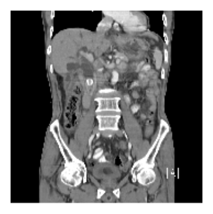
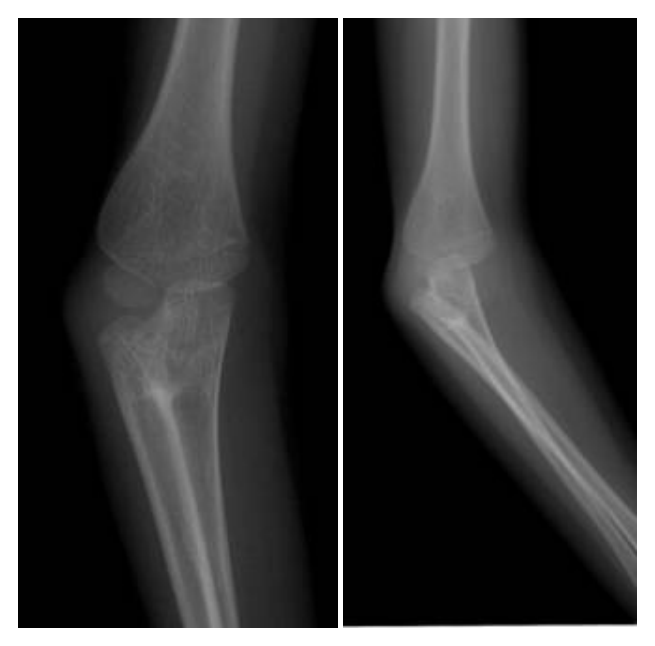
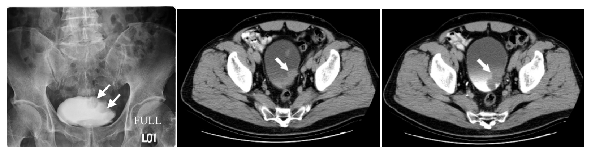
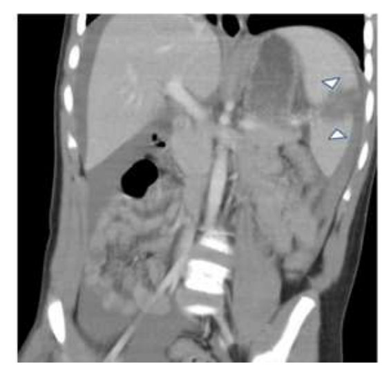
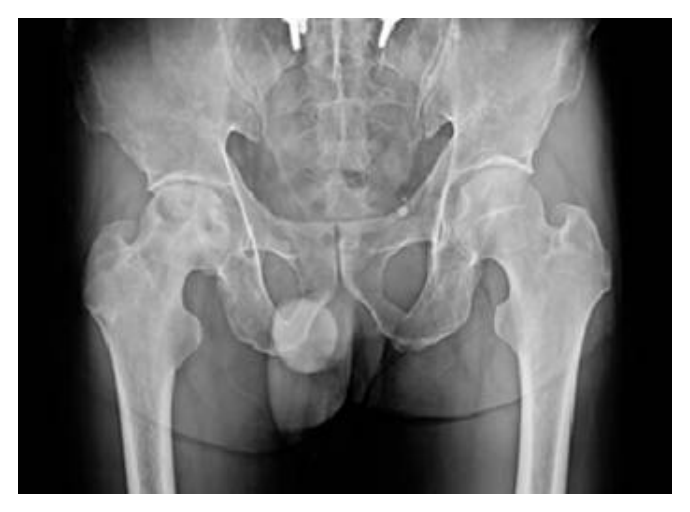

開卷有益 ／
醫師 ／ 醫學（五）（包括外科、骨科、泌尿科等科目及其相關臨床實例與醫學倫理） ／ 105 年第 1 次105 年第 1 次醫師醫學（五）（包括外科、骨科、泌尿科等科目及其相關臨床實例與醫學倫理）試題與答案
這一頁是民國 105 年第 1 次醫師醫學（五）（包括外科、骨科、泌尿科等科目及其相關臨床實例與醫學倫理）的整份歷屆試題，共 80 題，題目與標準答案出自考選部「國家考試試題及測驗式試題答案」開放資料，其中 80 題附有詳解。以下逐題列出題幹、選項與答案；要計時作答或記錄成績，請用線上練習。
考選部原始場次代碼：105020
線上作答這一科 →
全部 80 題
第 1 題
下列那一個腹部器官在腹部鈍傷中最常受到傷害？
（A） 肝臟（B） 腎臟（C） 脾臟（D） 胰臟答案：（C）
詳解與考點 正解：腹部鈍傷最常受傷的實質器官。脾臟位於左上腹、質地脆弱且血流豐富，鈍力撞擊或肋骨骨折容易造成脾裂傷與腹腔內出血，因此最常見的是脾臟，故選 C。
A：肝臟同樣是腹部鈍傷常受損的實質器官，尤其右上腹撞擊時，但整體頻率通常不及脾臟，故非答案。
B：腎臟受後腹膜保護，雖可於側腹撞擊受傷，卻不是腹部鈍傷最常見受傷器官，故非答案。
D：胰臟位於後腹膜，通常須較強的上腹部壓迫才受傷，發生率較低，故非答案。
本題考點：腹部鈍傷（blunt abdominal trauma）常傷及實質器官；脾臟損傷（splenic injury）是最常見類型；快速辨識腹腔內出血（hemoperitoneum）是創傷評估重點。
第 2 題
25歲年輕男子，因騎乘重型機車發生事故，造成嚴重骨盆骨折（pelvic fracture）。抵達急診時呈現休克，經大量輸液與輸血灌救後，收縮壓高於90 mmHg，並隨即接受腹部電腦斷層攝影檢查。但發現骨盆腔出現顯影劑外滲（contrastextravasation）。下列何種治療方法治療出血性休克效果最佳？
（A） 繼續輸血（transfusion）（B） 骨盆外固定（external fixation）（C） 剖腹手術結紮髂外動脈（external iliac artery ligation）（D） 血管栓塞術（angio-embolization）答案：（D）
詳解與考點 正解：骨盆骨折病人經復甦後收縮壓已高於90 mmHg，CT 又直接顯示骨盆腔顯影劑外滲，表示仍有可定位的活動性出血。對血流動力學暫時穩定且有動脈出血證據者，血管攝影合併選擇性血管栓塞可直接控制出血，故選 D。
A：持續輸血是復甦的一部分，但只能補充血容量，不能停止已在 CT 顯示的出血來源，故非最佳治療。
B：骨盆外固定可減少骨盆容積並穩定骨折，對靜脈叢出血尤其重要；但本題已有顯影劑外滲，最具針對性的止血方式是血管栓塞。
C：結紮髂外動脈無法作為骨盆出血的標準選擇性處置，且會造成嚴重下肢灌流風險，故非答案。
本題考點：骨盆骨折出血（pelvic fracture hemorrhage）需同步復甦與機械穩定；CT 顯影劑外滲（contrast extravasation）提示活動性出血；血管栓塞（angioembolization）適用於可接受介入治療的病人。
第 3 題
當車禍事故的傷患被送至急診室急救時，如果發現呼吸道有異物、呼吸困難或神智不清時，應立即給予氣管內插管（endotracheal intubation）。下列何項為外傷病患緊急插管時，最應該注意之事項？
（A） 保護頸椎（cervical spine protection）（B） 注意腦壓升高（C） 注意吸入性肺炎（aspiration pneumonia）（D） 注意麻藥劑量過多答案：（A）
詳解與考點 正解：外傷病人需緊急插管，須先假定可能合併頸椎損傷。插管時若過度伸展或旋轉頸部，可能使不穩定頸椎移位而造成繼發性脊髓傷害，因此應在手動頸椎固定下完成氣道處置，故選 A。
B：腦壓升高的病人插管時確需避免缺氧與血流動力學劇烈波動，但它不是所有外傷病患插管最優先、最普遍的特有注意事項。
C：吸入風險需透過抽吸、快速序列誘導等方式降低，但外傷插管首先不能漏掉頸椎保護，故非答案。
D：麻醉藥劑量須依生理狀態調整，尤其休克病人，但這是藥物安全議題，不能取代頸椎保護這項外傷核心原則。
本題考點：外傷氣道處置（trauma airway management）須先維持氣道（airway）並保護頸椎（cervical spine protection）；手動直線固定（manual in-line stabilization）可降低插管造成的頸椎移動。
第 4 題
一位70公斤且多重外傷之病人於急診之總輸血量超過2500毫升，雖經過緊急手術止血，受傷後第一天之總輸血量仍超過5000毫升。於加護病房照護初期，下列何種變化較少出現？
（A） 稀釋性血小板缺乏（dilution thrombocytopenia）（B） 酸中毒（metabolic acidosis）（C） 高血鉀症（hyperkalemia）（D） 溶血性反應（hemolytic reaction）答案：（D）
詳解與考點 正解：大量輸血後加護初期「較少出現」的變化。大量輸血與失血復甦常引起稀釋性凝血異常、休克相關酸中毒及儲存血相關電解質問題；溶血性反應則多與血型不相容等輸血錯誤有關，並非大量輸血本身的常見預期變化，故選 D。
A：大量輸入紅血球與晶體液會稀釋血小板及凝血因子，稀釋性血小板缺乏是常見併發問題，故非答案。
B：持續失血、組織低灌流與乳酸累積可造成代謝性酸中毒，故非答案。
C：儲存血品中的鉀離子可能上升，加上休克與腎灌流下降，高血鉀症可出現，故非答案。
本題考點：大量輸血（massive transfusion）可造成稀釋性凝血病（dilutional coagulopathy）、酸中毒（metabolic acidosis）與高血鉀症（hyperkalemia）；急性溶血反應（acute hemolytic reaction）應另尋血品不相容等原因。
第 5 題
頭部外傷的急救處置應以何者為優先？
（A） 胸部X光檢查（B） 檢驗尿液（C） 腹部X光檢查（D） 矯正低血壓，維持足夠的供氧答案：（D）
詳解與考點 正解：頭部外傷急救的優先處置。繼發性腦傷會因低血壓與低血氧而惡化，因此首先應確保氧合、通氣與循環灌流，矯正低血壓並維持足夠供氧，故選 D。
A：胸部 X 光可協助評估合併胸傷或管路位置，但檢查不能優先於立即矯正缺氧與低灌流，故非答案。
B：尿液檢驗可提供後續診斷資訊，卻無法立即改善腦部氧氣與灌流，故非答案。
C：腹部 X 光在部分創傷情境可輔助評估，但同樣不是頭傷初期維生處置的優先項目。
本題考點：頭部外傷（head injury）的初期復甦遵循創傷 ABC；繼發性腦傷（secondary brain injury）須避免低血氧（hypoxemia）與低血壓（hypotension）；腦灌流（cerebral perfusion）是急救優先目標。
第 6 題
70歲男性糖尿病人需接受小腸惡性腫瘤切除手術，應採取什麼措施來預防手術部位感染（surgical site infections）？
（A） 在手術切開皮膚之後給予抗生素（B） 控制其血糖在200〜250 mg/dL（C） 手術中將病人體溫維持在35.5〜36℃（D） 手術時間超過使用之抗生素的半生期（half life）2倍長時，追加一次抗生素答案：（D）
詳解與考點 正解：手術時間超過預防性抗生素有效濃度可維持的期間；抗生素必須在切皮時已有足夠組織濃度，且長時間手術中要維持此濃度。若手術時間超過所用抗生素半衰期的 2 倍，應追加劑量，故選 D。
A：切開皮膚後才給予抗生素，無法在切口最初受污染時提供足夠組織濃度；它看似仍在手術期間用藥，卻錯在預防性投藥的關鍵時機。
B：糖尿病病人的周手術期血糖控制確有助於降低感染風險，但將血糖維持在 200～250 mg/dL 並非適當的感染預防目標，過高血糖反會妨礙免疫功能與傷口癒合。
C：周手術期應避免低體溫，因低體溫會造成血管收縮、降低組織氧合並增加感染風險；35.5～36℃偏低，並非理想措施。
本題考點：手術部位感染預防（surgical site infection prevention）——預防性抗生素須在切皮前給予，且長時間手術依藥物半衰期追加；周手術期血糖控制（perioperative glycemic control）與維持正常體溫（normothermia）同為重要措施。
第 7 題
腹內實質臟器發生鈍性挫傷時，非手術療法（nonoperative management）已成為常態性之治療方式。當摩托車騎士受傷後，經確認診斷為單獨性肝臟裂傷（isolated liver laceration），經採用非手術療法後，下列何種合併症比較不會出現？
（A） 延遲性腹內出血（delayed hemorrhage）（B） 肝膿瘍（liver abscess）（C） 黃疸（jaundice）（D） 血尿（hematuria）答案：（D）
詳解與考點 正解：「單獨性肝臟裂傷」接受非手術治療；其合併症應主要來自肝臟本身的出血、膽道或感染問題。血尿代表泌尿道，尤其腎臟或下泌尿道受傷的線索，不能由孤立性肝裂傷直接解釋，故比較不會出現的是 D。
A：肝裂傷即使初期穩定，仍可能因血腫變化、血管傷害或再出血而出現延遲性腹內出血，是非手術觀察時必須監測的併發症。
B：肝臟受傷後的壞死組織、血腫或膽汁滯留可能成為感染來源，肝膿瘍雖非最常見，仍是可能的肝臟相關併發症。
C：肝實質或膽道受傷可造成膽汁滲漏、膽瘤或膽道阻塞，因而出現黃疸；它看似是內科肝膽問題，實際上可由肝外傷的膽道併發症造成。
本題考點：鈍性肝外傷的非手術治療（nonoperative management of blunt liver injury）——適用於血流動力學穩定者；追蹤重點包括延遲出血、膽汁滲漏／膽瘤及感染；血尿則提示合併泌尿生殖道損傷。
第 8 題
Hirschsprung's disease信賴度最高（gold standard）的診斷依據為何？
（A） 超過48小時未解胎便（B） 肛門壓力計檢查（manometry study）（C） 直腸切片檢查（rectal biopsy）（D） 下消化道鋇劑檢查（lower GI barium enema）答案：（C）
詳解與考點 正解：Hirschsprung disease 的「gold standard」。此病的本質是遠端腸管缺乏腸神經節細胞（ganglion cells），直腸切片可直接做病理確認有無神經節細胞，因此是確診依據，故選 C。
A：出生超過 48 小時未排胎便是 Hirschsprung disease 的重要警訊，但只是臨床表現，早產、敗血症或其他腸道問題也可能造成排便延遲，不能單獨確診。
B：肛門直腸壓力計可評估直腸肛門抑制反射（rectoanal inhibitory reflex）；反射缺失支持診斷，但屬功能性篩檢，仍需病理切片確認。
D：下消化道鋇劑檢查可見遠端狹窄與近端擴張的轉換區（transition zone），看似很有特異性，卻可能不典型，尤其新生兒早期不能取代切片。
本題考點：先天性巨結腸症（Hirschsprung disease）——病因為腸神經節細胞缺失（aganglionosis）；直腸切片（rectal biopsy）是確診標準；肛門壓力計與鋇劑灌腸是輔助評估。
第 9 題
心包填塞（cardiac tamponade）是下列那一個情形？中心靜脈壓（central venous pressure），動脈壓（arterial blood pressure），心輸出量（cardiac output），混合靜脈血氧飽和度（mixed venous oxygenation saturation）
中心靜脈壓 動脈壓 心輸出量 混合靜脈血氧飽和度 A ↓ ↓ ↓ ↓ B ↑ ↓ ↓ ↓ C ↑ ↓ ↓ ↑ D ↑ ↑ ↑ ↓
（A） A（B） B（C） C（D） D答案：（B）
詳解與考點 正解：心包填塞限制心室舒張充填。靜脈回流受阻使中心靜脈壓上升；心室充填量下降使搏出量與心輸出量下降，因而動脈壓下降；組織氧輸送減少會增加氧萃取，混合靜脈血氧飽和度下降。表中同時符合「CVP ↑、動脈壓 ↓、心輸出量 ↓、混合靜脈血氧飽和度 ↓」的是 B，故選 B。
A：此列的中心靜脈壓下降，較像有效循環血容量減少；心包填塞的關鍵血流動力學表現反而是靜脈壓上升。
C：中心靜脈壓、動脈壓與心輸出量的方向相符，但混合靜脈血氧飽和度不應上升。低心輸出量時周邊組織增加氧萃取，回流靜脈血的氧飽和度應降低。
D：此列呈現心輸出量與動脈壓均上升，與心包壓力抑制心室充填所致的低心輸出狀態相反。
本題考點：心包填塞（cardiac tamponade）的血流動力學——心室舒張受限造成靜脈壓上升與心輸出量下降；低灌流使動脈壓及混合靜脈血氧飽和度下降。
第 10 題
下列有關治療多汗症手術的敘述，何者錯誤？
（A） 手掌及腋下多汗可透過胸腔交感神經切除術改善（B） 手術切除的主要部位是第四及第五胸交感神經節（C） 可能副作用中的Horner's syndrome原因是將T1交感神經節切除（D） 可能的副作用包括血胸及氣胸答案：（B）
詳解與考點 正解：本題問錯誤敘述。胸腔鏡交感神經切除術（endoscopic thoracic sympathectomy）治療多汗症時，切斷節段須依手掌、腋下等部位調整，不能概括說主要固定切除第四及第五胸交感神經節；手掌多汗的交感神經目標通常較高胸段，故 B 錯誤。
A：胸腔交感神經切除術可降低上肢交感神經支配區的出汗，對手掌多汗尤有效，腋下多汗也可在適當節段處理，敘述合理。
C：Horner syndrome 是交感神經眼部路徑受損的表現；若手術傷及較高位的 T1 交感神經節或其附近纖維，確可能發生，因此此敘述正確、不是答案。
D：此術進入胸腔，氣胸與血胸都是少見但應留意的手術併發症，敘述正確。
本題考點：胸腔鏡交感神經切除術（endoscopic thoracic sympathectomy）——治療上肢多汗時依症狀部位選擇胸交感神經節段；高位交感神經損傷可致 Horner syndrome；胸腔操作須防氣胸與血胸。
第 11 題
最常造成自發性蜘蛛網膜下腔出血的原因是：
（A） 高血壓（B） 腫瘤出血（C） 顱內動脈瘤破裂（D） 顱內動靜脈畸形破裂答案：（C）
詳解與考點 正解：「自發性」蜘蛛網膜下腔出血最常見病因。顱內囊狀動脈瘤（saccular intracranial aneurysm）破裂會使血液直接進入蜘蛛網膜下腔，是典型且最常見的原因，故選 C。
A：高血壓是腦內出血的重要危險因子，也可能與動脈瘤形成或破裂風險相關，但並不是自發性蜘蛛網膜下腔出血最常見的直接出血來源。
B：腫瘤可以出血，但腫瘤出血較常造成腦實質內出血或局部病灶，不是典型的自發性蜘蛛網膜下腔出血主因。
D：顱內動靜脈畸形破裂也能造成蜘蛛網膜下腔出血，是重要誘答；但其整體發生率低於動脈瘤破裂，故非最常見。
本題考點：蜘蛛網膜下腔出血（subarachnoid hemorrhage）——非外傷性病例最常見於顱內囊狀動脈瘤破裂；動靜脈畸形（arteriovenous malformation）亦可出血但較少見。
第 12 題
脊椎損傷病人中，容易出現呼吸衰竭的是那幾節？
（A） 第三至第五頸椎（B） 第六至第七頸椎（C） 第三至第七胸椎（D） 第四至第五腰椎答案：（A）
詳解與考點 正解：呼吸衰竭與膈神經支配。膈神經主要來自 C3、C4、C5，負責驅動膈肌；第三至第五頸椎脊髓損傷會損及這些節段的呼吸神經元，導致膈肌麻痺與嚴重通氣不足，最容易出現呼吸衰竭，故選 A。
B：C6 至 C7 損傷可嚴重影響上肢功能，也可能因肋間肌無力影響咳嗽與呼吸效率，但通常保留主要膈神經驅動，較不易直接造成呼吸衰竭。
C：T3 至 T7 損傷會影響部分肋間肌與軀幹肌，但膈神經來源在頸髓，膈肌多仍能收縮，不是最典型的立即呼吸衰竭節段。
D：L4 至 L5 損傷影響下肢運動、感覺與膀胱功能，與主要呼吸肌的神經支配無關。
本題考點：膈神經（phrenic nerve）——源自 C3–C5，主導膈肌收縮；高頸髓損傷（high cervical spinal cord injury）可因膈肌麻痺造成呼吸衰竭。
第 13 題
高血壓性腦內出血，最好發的位置在：
（A） 豆狀核（putamen）（B） 小腦（cerebellum）（C） 橋腦（pons）（D） 視丘（thalamus）答案：（A）
詳解與考點 正解：高血壓性腦內出血的好發部位。長期高血壓造成深部穿通動脈病變，最常累及基底核區的豆狀核，尤其是由中大腦動脈豆紋動脈供應處，因此豆狀核是最常見位置，故選 A。
B：小腦也是高血壓性腦出血的典型部位之一，但發生頻率低於基底核的豆狀核。
C：橋腦出血同樣可由高血壓性小血管病變造成，常病情兇險，卻不是最常見的部位。
D：視丘亦屬深部穿通動脈供應區，可發生高血壓性腦出血；它看似同樣符合「深部腦出血」，但整體好發率仍低於豆狀核。
本題考點：高血壓性腦內出血（hypertensive intracerebral hemorrhage）——慢性高血壓傷害深部穿通動脈；常見部位為基底核豆狀核（putamen），亦可見於視丘、橋腦與小腦。
第 14 題
下列有關腦膜瘤（meningioma）的敘述，何者錯誤？
（A） 腦膜瘤是由硬腦膜（dura）生長來的（B） 一般而言生長較緩慢（C） 鄰近骨頭有增生（hyperostosis）的現象（D） 矢狀竇旁（parasagittal）的位置最常見答案：（A）
詳解與考點 正解：本題問錯誤敘述。腦膜瘤源自蛛網膜帽細胞（arachnoid cap cells），通常附著於硬腦膜，但不是由硬腦膜本身生長而來；把附著位置誤作組織起源是本題關鍵，故 A 錯誤。
B：多數腦膜瘤為良性且生長緩慢，常因腫瘤逐漸壓迫周邊腦組織而出現症狀，敘述正確。
C：腦膜瘤可造成鄰近骨質增生（hyperostosis），是影像上常見的相關變化，敘述正確。
D：矢狀竇旁是腦膜瘤常見的發生位置之一，與腫瘤偏好硬腦膜反射處及靜脈竇附近有關，敘述正確。
本題考點：腦膜瘤（meningioma）——起源於蛛網膜帽細胞（arachnoid cap cells），非硬腦膜；多數生長緩慢，常附著硬腦膜並可伴隨鄰近骨質增生（hyperostosis）。
第 15 題
急性硬腦膜外血腫（epidural hematoma）的病人，下列敘述何者錯誤？
（A） 常合併有顱骨骨折（B） 常因是中腦膜動脈（middle meningeal artery）破裂所致（C） 預後比急性硬腦膜內血腫（acute subdural hematoma）不好（D） 約有1/3的病人到急診處呈昏迷狀態答案：（C）
詳解與考點 正解：本題問錯誤敘述。急性硬腦膜外血腫通常是局部、可手術清除的血腫，若能及早診斷與處置，預後一般優於常伴廣泛腦實質傷害的急性硬腦膜下血腫；因此 C 說其預後較差為錯誤。
A：硬腦膜外血腫常與顱骨骨折相關，骨折可能撕裂硬腦膜與骨間的血管，敘述正確。
B：顳骨區骨折損傷中腦膜動脈是急性硬腦膜外血腫的典型機轉，敘述正確。
D：急性硬腦膜外血腫患者的意識狀態可從清醒到昏迷，部分患者到急診已呈昏迷，不能因教科書常提及清醒期（lucid interval）就排除此情況；敘述可成立。
本題考點：急性硬腦膜外血腫（acute epidural hematoma）——常與顱骨骨折及中腦膜動脈破裂相關；及早手術減壓時預後通常優於急性硬腦膜下血腫（acute subdural hematoma）。
第 16 題
表皮樣囊腫（epidermoid tumor）腦瘤會有下列何種特質？
（A） 細菌性腦膜炎（bacterial meningitis）（B） 伴有先天異常（associated congenital malformations）（C） 對放射性治療有效（responsive to radiation therapy）（D） 無菌性腦膜炎（aseptic meningitis）答案：（D）
詳解與考點 正解：表皮樣囊腫內容物外漏時的化學性刺激。表皮樣囊腫內含角蛋白與脂質性碎屑，若破裂或手術時內容物進入蜘蛛網膜下腔，可引起無菌性、化學性腦膜炎（aseptic meningitis），故選 D。
A：細菌性腦膜炎需要病原菌感染；表皮樣囊腫造成的腦膜刺激是無菌性發炎，不能把腦膜炎症狀直接等同細菌感染。
B：表皮樣囊腫是先天性包涵性病灶，但「伴有先天異常」不是其典型用來辨識的特質，不能作為本題最佳答案。
C：表皮樣囊腫對放射線治療不敏感，主要治療為手術盡可能切除；因囊壁可與重要神經血管沾黏，手術策略須兼顧安全。
本題考點：表皮樣囊腫（epidermoid tumor）——為含角蛋白碎屑的先天性包涵性病灶；內容物逸出可致無菌性／化學性腦膜炎（aseptic or chemical meningitis）；主要治療是手術切除。
第 17 題
下列有關掌內肌群（intrinsic muscles）之敘述，何者錯誤？
（A） 外展拇肌（abductor pollicis）是由正中神經（median nerve）所支配的（B） 掌短肌（palmaris brevis）是由正中神經（median nerve）所支配的（C） 背側掌骨間肌（dorsal interossei）是由尺神經（ulnar nerve）所支配的（D） 蚓狀肌（lumbricals）是由正中神經（median nerve）和尺神經（ulnar nerve）共同支配的答案：（B）
詳解與考點 正解：本題問錯誤敘述。掌短肌位於小指側掌緣，受尺神經淺支（superficial branch of ulnar nerve）支配，不是正中神經支配，因此 B 錯誤。
A：外展拇短肌是魚際肌群的一員，通常由正中神經返支支配，敘述正確。
C：背側掌骨間肌由尺神經深支支配，負責手指外展，敘述正確。
D：四條蚓狀肌的神經支配分屬兩神經：外側兩條主要由正中神經支配，內側兩條由尺神經深支支配，因此整體而言由正中與尺神經共同支配，敘述正確。
本題考點：手部內在肌（intrinsic muscles of hand）神經支配——魚際肌多由正中神經支配；骨間肌與掌短肌主要由尺神經支配；蚓狀肌分別接受正中神經與尺神經支配。
第 18 題
當褥瘡（pressure ulcer）侵蝕到肌肉及骨頭的時候屬於：
（A） Stage I（B） Stage II（C） Stage III（D） Stage IV答案：（D）
詳解與考點 正解：壓力性損傷已侵蝕到肌肉及骨頭，表示全層皮膚與軟組織缺損深達深筋膜以下的深層構造。Stage IV 的定義即為可見或可觸及肌肉、肌腱、軟骨或骨頭的全層組織缺損，故選 D。
A：Stage I 為皮膚完整但局部持續發紅，按壓不褪色，尚無皮膚破損或深層組織暴露。
B：Stage II 是部分皮層皮膚缺損，常表現為淺潰瘍或水泡，不會深及肌肉與骨頭。
C：Stage III 是全層皮膚缺損，可見皮下脂肪與肉芽組織，但不應有筋膜、肌肉、肌腱或骨頭暴露；它看似已是深層潰瘍，深度仍未達本題描述。
本題考點：壓力性損傷分期（pressure injury staging）——Stage I 為不褪色紅斑；Stage II 為部分皮層缺損；Stage III 可見脂肪但無肌骨暴露；Stage IV 深及肌肉、肌腱或骨頭。
第 19 題
20歲、60公斤體重健康大學生，於餐廳打工時不慎打翻熱茶桶。高溫熱茶潑及他的兩側下肢，造成此二肢體全部燙傷起水泡。依據「9的規則」（rule of nines）與「帕克蘭公式」（Parkland formula）估算，下列關於此學生之「燙傷面積」及「受傷後24小時靜脈輸液量」敘述，何者最適當？
（A） 36%體表面積、8,640公撮（miniliters, mL.）晶質溶液（crystalloid）（B） 36%體表面積、3,240公撮晶質溶液（crystalloid）加上1,080公撮膠質溶液（colloid）（C） 45%體表面積、10,8000公撮晶質溶液（D） 45%體表面積、4,050公撮晶質溶液加上1,350公撮膠質溶液答案：（A）
詳解與考點 正解：兩側下肢「全部」燙傷。9 的規則中，每一側成人下肢為 18% 體表面積，兩側合計 18%＋18%＝36%。帕克蘭公式為 4 mL × 體重（kg）× 燒傷面積（%TBSA），因此 4 mL × 60 kg × 36=8,640 mL，為受傷後 24 小時的晶質液估計量，故選 A。
B：36% 體表面積判斷正確，但 3,240 mL 晶質液加 1,080 mL 膠質液總量只有 4,320 mL，未符合帕克蘭公式算出的 8,640 mL；它看似混合液體較完整，錯在總量與公式不符。
C：兩側下肢合計是 36% 而非 45%，且依本題體重與面積代入帕克蘭公式也不會得到選項的液體量。
D：45% 的燙傷面積已先判斷錯誤，後續以此為基礎計算的輸液量與液體組成自然不適當。
本題考點：9 的規則（rule of nines）——成人單側下肢占 18% 體表面積（total body surface area, TBSA）；帕克蘭公式（Parkland formula）——24 小時輸液量＝4 mL × 體重（kg）× %TBSA，使用晶質液估算。
第 20 題
使用局部的轉位皮瓣（local rotational flaps）時有那些注意事項，但何者除外：
（A） 轉位皮瓣的長與寬之比例（B） 縫合後轉位皮瓣周圍所承受的張力（C） 傷口包紮的鬆緊度（D） 縫線的顏色答案：（D）
詳解與考點 正解：題目問局部轉位皮瓣的注意事項「除外」，應挑選與皮瓣存活及傷口張力無關者。縫線顏色不影響皮瓣血流、設計、張力或傷口癒合，故 D 為除外項。
A：皮瓣長寬比例會影響遠端灌流與壞死風險，尤其隨機型皮瓣（random-pattern flap）需避免設計過長過窄，是重要考量。
B：轉位後周圍張力過高會壓迫微循環、造成傷口裂開或皮瓣邊緣壞死，因此必須評估與適度釋放張力。
C：過緊包紮可能壓迫皮瓣血流，過鬆又可能增加血腫、剪力或污染風險，包紮鬆緊度與皮瓣存活有關。
本題考點：局部轉位皮瓣（local rotational flap）——設計須考量長寬比例、血液供應與轉位後張力；術後敷料不可壓迫皮瓣；縫線顏色不影響重建成敗。
第 21 題
下列有關心房震顫（atrial fibrillation）之敘述，何者錯誤？
（A） 藥物療法除了心率控制以外，須包括抗凝血療法以減少血栓產生（B） 手術適應症包括藥物治療無效合併心房震顫引起之心肌病變、無法接受抗心律不整藥物或抗凝血藥物的治療（C） 目前ablation術式包括冷凍療法（cryoablation）、微波燒灼（microwave）、雷射燒灼（laser）等（D） 目前外科手術中，cut-and-sew Cox-Maze III procedure術後約只有一半的病患可跳回正常的竇性心律答案：（D）
詳解與考點 正解：本題問錯誤敘述。cut-and-sew Cox-Maze III procedure 以切割與縫合線阻斷心房折返迴路，術後恢復竇性心律的成功率不只一半；（D）明顯低估成效，故為錯誤。官方答案以歷史性術式效果為判準，精確成功率會隨病人與追蹤期間而異。
A：心房顫動除心率或節律控制外，仍須依血栓栓塞風險決定抗凝血治療，以預防腦中風與全身性栓塞。
B：無法接受抗心律不整藥物時，可考慮消融或外科節律治療；但無法接受抗凝血藥物不能僅靠成功消融或 Maze procedure 解決，之後是否抗凝仍須依血栓栓塞風險決定。此選項混合兩種情境，與現行觀點有爭議。
C：冷凍消融在現代仍為常用能量來源；微波與雷射曾出現在早期消融或外科節律治療的技術列舉，但現今主流能量來源與術式已有變化。依本題年代，列舉本身不是（D）所考的明確錯誤。
本題考點：心房顫動（atrial fibrillation）；Maze procedure；抗凝血治療（anticoagulation）須依血栓栓塞風險決定，不能以節律控制成功與否單獨取代。
第 22 題
針對末期心臟衰竭的病人，在心臟移植之前，尚有其他手術方式可以改善心臟功能及臨床症狀，但下列何者除外？
（A） 冠狀動脈繞道手術（coronary artery bypass surgery）（B） 二尖瓣逆流重建手術（mitral reconstruction）（C） 經心肌雷射血管再生術（transmyocardial laser revascularization）（D） 部分左心室心肌切除手術（partial left ventriculectomy）答案：（C）
詳解與考點 正解：末期心衰竭病人在心臟移植前可用來改善心臟功能與症狀的手術選項。經心肌雷射血管再生術（transmyocardial laser revascularization）主要是針對難以血運重建的嚴重心絞痛所發展，不能作為改善末期心衰竭心臟功能的標準橋接手術，因此為除外項，故選 C。此類術式的適應症與證據隨時代演變
A：若末期心衰竭與可重建的缺血性心肌病變相關，冠狀動脈繞道手術可改善心肌灌流並可能改善症狀與功能，並非除外。
B：嚴重二尖瓣逆流會加重容量負荷與心衰竭症狀；在合適病人，二尖瓣重建可改善逆流及臨床狀態，並非除外。
D：部分左心室心肌切除術（partial left ventriculectomy）是歷史上曾用於擴張型心肌病變的減容手術，雖適應症嚴格且現今使用有限，但題目所屬脈絡將其列為可嘗試改善心室功能的外科方式。
本題考點：末期心衰竭的外科治療（surgical treatment of end-stage heart failure）——應矯正可逆的缺血與瓣膜病變；心臟移植（heart transplantation）前的手術選擇需依病因；經心肌雷射血管再生術（transmyocardial laser revascularization）不是標準心衰竭功能改善術式。
第 23 題
下列關於急性心肌梗塞的敘述，何者錯誤？
（A） 可能因僧帽瓣破裂（mitral valve）而併發急性僧帽瓣閉鎖不全（mitral regurgitation），需要緊急手術（B） 若發生心室中隔破裂（ventricular septal rupture）需要緊急手術（C） 若發生左心室游離壁破裂（left ventricular freewall rupture）需要緊急手術（D） 主動脈內氣球幫浦（intra-aortic balloon pumping）常用於急性心肌梗塞併發休克答案：（A）
詳解與考點 正解：本題問錯誤敘述。急性心肌梗塞後急性嚴重二尖瓣逆流的典型機轉是乳突肌缺血或破裂，不是二尖瓣瓣葉本身破裂；（A）病變部位錯誤，故選 A。
B：心室中隔破裂可造成急性左向右分流、肺水腫與心因性休克，需緊急外科評估與修補。
C：左心室游離壁破裂可致心包填塞；能及時辨識並存活到治療者需緊急外科處置。
D：舊題常將主動脈內氣球幫浦視為急性心肌梗塞併休克的常用支持；現今不建議在未合併機械性併發症的心肌梗塞心因性休克中常規使用，但乳突肌破裂或心室中隔破裂時可作橋接。
本題考點：急性心肌梗塞機械性併發症（mechanical complications of acute myocardial infarction）；乳突肌破裂（papillary muscle rupture）；主動脈內氣球幫浦（intra-aortic balloon pump）之橋接角色。
第 24 題
下列有關腹主動脈瘤（abdominal aortic aneurysm）手術適應症之敘述，何者錯誤？
（A） 最大直徑> 5.5 cm，應手術治療（B） 最大直徑介於4.0～5.0 cm且每年增加1 cm，應手術治療（C） 合併有腹痛，背痛或是血栓形成造成周邊動脈堵塞，應立即手術治療（D） 破裂的腹主動脈瘤，手術死亡率極高，並不建議立即手術治療答案：（D）
詳解與考點 正解：本題問錯誤敘述。破裂性腹主動脈瘤是立即危及生命的出血急症，雖開放手術或血管內修復死亡風險極高，仍須在復甦下緊急處置；D 說不建議立即手術，忽略了不治療幾乎無法存活，故錯誤。
A：無症狀腹主動脈瘤達較大直徑時，破裂風險上升，最大直徑超過 5.5 cm 是常用於考慮修復的重要門檻，敘述正確。
B：即使直徑尚未達大動脈瘤門檻，若短期快速擴大，代表破裂風險增加，應考慮手術治療，敘述正確。
C：腹痛、背痛或栓塞性周邊缺血提示有症狀或併發症的腹主動脈瘤；它看似只是症狀處理問題，實際上是需緊急血管外科評估與治療的警訊，敘述正確。
本題考點：腹主動脈瘤（abdominal aortic aneurysm）修復適應症——依直徑、成長速度與症狀判斷；破裂性腹主動脈瘤（ruptured abdominal aortic aneurysm）死亡率高但屬緊急手術／血管內修復適應症。
第 25 題
在食道癌的TNM分期中，其T的分期最準確的檢查為下列何者？
（A） 電腦斷層檢查（computed tomography）（B） 內視鏡超音波檢查（endoscopic ultrasound）（C） 核磁共振影像檢查（magnetic resonance imaging）（D） 正子攝影檢查（positron emission tomography）答案：（B）
詳解與考點 正解：食道癌 TNM 中的 T 分期，也就是腫瘤侵犯食道壁的深度。內視鏡超音波可分辨食道壁各層結構，直接評估腫瘤是否侵犯黏膜、黏膜下層、肌層或外膜，因此是 T 分期最準確的檢查，故選 B。
A：電腦斷層擅長評估遠端轉移、鄰近器官侵犯與較大的淋巴結，但對食道壁分層深度的解析度不足，不能最準確判定 T 分期。
C：核磁共振影像對某些軟組織病灶有優勢，但不是食道癌局部壁層侵犯分期的首選檢查。
D：正子攝影檢查主要用於尋找代謝活躍的遠端轉移或隱匿病灶；它看似能看見腫瘤活性，卻不能精細區分食道壁侵入深度。
本題考點：食道癌 TNM 分期（esophageal cancer TNM staging）——T 分期評估原發腫瘤侵犯深度；內視鏡超音波（endoscopic ultrasound, EUS）最能辨識食道壁分層；電腦斷層與正子攝影較用於整體分期與遠端病灶評估。
第 26 題
當一位肺癌病人其頸部有淋巴結硬塊時，最適當的處置為何？
（A） 以內視鏡切除肺腫瘤（B） 以內視鏡切除肺腫瘤加上縱隔淋巴結清掃（C） 以內視鏡切除肺腫瘤加上縱隔及頸部淋巴結清掃（D） 安排頸部淋巴結細針穿刺切片檢查答案：（D）
詳解與考點 正解：肺癌病人出現頸部淋巴結硬塊，這可能代表胸腔外淋巴結轉移並改變分期與治療目的；應先以（D）頸部淋巴結細針穿刺切片（fine-needle aspiration biopsy）取得病理證實，再決定後續處置，故選 D。
A：僅以內視鏡切除肺腫瘤，未先確認頸部淋巴結是否為轉移，可能在已有遠端或非區域性淋巴結病灶時進行不適當的根治性手術。
B：加做縱隔淋巴結清掃雖可用於肺癌手術分期，但不能取代對可疑頸部淋巴結的術前病理診斷。
C：同時清掃縱隔及頸部淋巴結是較侵入性的手術策略；頸部硬塊看似可一併處理，但首要問題是確認其性質與分期，應先做穿刺。
本題考點：肺癌分期（lung cancer staging）；細針穿刺切片（fine-needle aspiration biopsy）；術前病理確認可避免在不適合根治切除的情況下直接手術。
第 27 題
食道癌最常見的臨床狀況為何？
（A） 發燒（B） 胸痛（C） 漸行性吞嚥困難（D） 食道逆流答案：（C）
詳解與考點 正解：食道腔逐漸被腫瘤狹窄，最典型的表現是（C）漸行性吞嚥困難，常先難吞固體食物、進而連液體也困難，故選 C。
A：發燒較提示感染或腫瘤晚期併發症，並非食道癌最常見的起始症狀。
B：胸痛可出現於局部侵犯或吞嚥時，但辨識度不如漸進性的吞嚥困難。
D：食道逆流常見於胃食道逆流疾病，可能與食道腺癌風險相關；它看似與食道疾病有關，卻不是食道癌最常見的臨床主訴。
本題考點：食道癌（esophageal cancer）；漸行性吞嚥困難（progressive dysphagia）反映食道內腔逐步狹窄，是重要警訊。
第 28 題
切除轉移性肺腫瘤，下列敘述何項錯誤？
（A） 原發性腫瘤沒有復發情況下，才會進行肺轉移腫瘤切除（B） 內視鏡手術切除轉移肺腫瘤已是標準手術方式（C） 可減少腫瘤負擔（tumor burden）（D） 手術前胸部的MRI不一定需要答案：（B）
詳解與考點 正解：本題問轉移性肺腫瘤切除何者錯誤。內視鏡手術並非所有肺轉移病灶的標準術式，仍須依病灶數量、位置及是否需觸診尋找小病灶決定；（B）過度概括，故選 B。
A：傳統選案強調原發腫瘤已受控制；但「沒有復發才會」過度絕對，可控制的復發或正在處理的其他病灶不必然一概排除手術。官方答案採較傳統的選案框架。
C：完整切除或減量切除可降低可處理病灶的腫瘤負荷（tumor burden），是手術可能帶來的效益。
D：術前影像重點是適當評估肺內及胸腔病灶，胸部 MRI 並非每位病人的必要常規檢查。
本題考點：肺轉移腫瘤切除（pulmonary metastasectomy）；個別化選案（individualized surgical selection）；胸腔鏡手術（video-assisted thoracoscopic surgery）。
第 29 題
Model for End-Stage Liver Disease（MELD）scale是評估hepatic functional reserve的好方法，其內容不包括下列何者？
（A） serum albumin level（B） INR（international normalized ratio）（C） serum bilirubin level（D） serum creatinine level答案：（A）
詳解與考點 正解：經典 MELD 分數的組成。MELD以（B）INR、（C）serum bilirubin與（D）serum creatinine反映凝血、膽紅素排除與腎功能；不包括（A）serum albumin，故選 A。
B：INR是MELD的組成變項，用以反映肝臟合成凝血因子的功能。
C：serum bilirubin是MELD的組成變項，反映膽紅素代謝與排除受損程度。
D：serum creatinine是MELD的組成變項，因腎功能惡化會顯著影響末期肝病預後。
本題考點：末期肝病模型（Model for End-Stage Liver Disease, MELD）；經典MELD包含bilirubin、INR與creatinine，不以albumin作為計分變項。
第 30 題
肝癌患者有下列何種狀況不適合手術切除？
（A） 有肝硬化（B） 腫瘤大於10公分（C） 有腹水無法用利尿劑控制（D） 有末梢門脈血栓答案：（C）
詳解與考點 正解：肝癌切除必須保有足夠的肝功能儲備。（C）無法以利尿劑控制的腹水表示肝硬化已失代償，術後肝衰竭風險很高，通常不適合肝切除，故選 C。
A：肝硬化本身不等於絕對不能切除；仍須看肝功能儲備、門脈高壓與預定殘肝量。
B：腫瘤大於10公分增加手術難度與復發風險，但大小不是單獨決定能否切除的唯一條件。
D：末梢門脈血栓的意義須依位置與是否為腫瘤栓判讀；它看似代表血管侵犯，但相較於無法控制的腹水，並非本題所指的明確失代償禁忌。
本題考點：肝細胞癌切除（hepatectomy for hepatocellular carcinoma）；肝功能儲備（hepatic functional reserve）；難治性腹水（refractory ascites）提示失代償肝病與高術後風險。
第 31 題
下列有關肝臟解剖學之敘述，何者錯誤？
（A） 通常膽囊動脈源自於右肝動脈（B） 最常見的膽道構造為右前枝與右後枝膽管會合後，再與左膽管會合成總肝管（common hepatic duct）（C） 尾狀葉（caudate lobe）指的是Couinaud分類中的第一節葉（segment 1）（D） 即使在門脈高壓的情況底下，門脈循環與系統靜脈循環彼此之間仍然沒有聯繫（connection）答案：（D）
詳解與考點 正解：本題問何者錯誤。門脈高壓時，門脈與系統靜脈間的側枝循環（portosystemic collateral circulation）會擴張，形成食道胃靜脈曲張、腹壁靜脈曲張等表現；（D）稱兩者仍沒有聯繫錯誤，故選 D。
A：膽囊動脈通常源自右肝動脈，是常見的解剖關係。
B：右前枝與右後枝膽管匯合為右肝管，再與左肝管匯合成總肝管，是最常見的膽道分枝型態。
C：尾狀葉對應Couinaud分類的segment 1，敘述正確。
本題考點：門脈高壓（portal hypertension）；門體側枝循環（portosystemic collateral circulation）；Couinaud肝節段（Couinaud liver segments）。
第 32 題
一位18歲單身女性，有氣喘病史，右腎萎縮但腎功能正常。兩天前有上腹間歇性疼痛，有時伴有腹脹。她並不在意，但昨天忽然覺得右下腹疼痛，且有加劇的現象。她來到急診室，當時胃口不佳，但無噁心或嘔吐。血壓107/71 mmHg，體溫36.8 oC，脈搏74下/min，呼吸 20 次/min。白血球：13000/ mm3，血色素：12.5 g/dL，血小板：259 × 103 /mm3。最可能的診斷為何？
（A） 泌尿道結石（B） 急性闌尾炎（C） 子宮外孕（D） 骨盆腔發炎答案：（B）
詳解與考點 正解：腹痛由上腹間歇痛轉為逐漸加劇的右下腹痛，合併食慾不振與白血球13000/mm3，符合急性闌尾炎的疼痛遷移與發炎表現，故選 B。年輕女性仍應在臨床上同時排除懷孕相關疾病，但就題幹線索最符合急性闌尾炎。
A：泌尿道結石常有絞痛、血尿或放射至腹股溝的疼痛，無法良好解釋本題的疼痛遷移、食慾不振與白血球上升。
C：子宮外孕是育齡女性右下腹痛的重要鑑別診斷，會讓人警覺；但題幹未提供停經、陰道出血或血流動力不穩等支持線索，整體較不像。
D：骨盆腔發炎常合併下腹痛、發燒、陰道分泌物或子宮頸搖擺痛，本題病史不支持。
本題考點：急性闌尾炎（acute appendicitis）；疼痛遷移（migratory abdominal pain）；右下腹痛在育齡女性須鑑別子宮外孕與骨盆腔發炎。
第 33 題
有關胃腺癌之分期，TNM中“T”代表：
（A） 腫瘤位置（B） 腫瘤大小（C） 腫瘤侵犯深度（D） 腫瘤肉眼觀答案：（C）
詳解與考點 正解：胃腺癌TNM分期中的T。T描述原發腫瘤侵入胃壁的深度及是否侵犯鄰近結構，而非單純位置或肉眼外觀，故選 C。
A：腫瘤位置可用於描述病灶所在胃部區域，但不是TNM中T的定義。
B：腫瘤大小在部分癌種影響T分類，但胃癌T分期的核心是胃壁侵犯深度。
D：肉眼觀是內視鏡或病理描述的一部分，不能取代TNM對腫瘤侵犯範圍的判定。
本題考點：TNM分期（TNM staging）；胃癌T分期（gastric cancer T category）主要依腫瘤侵犯胃壁層次與鄰近結構判定。
第 34 題
在切片的觀察中，胃黏膜上皮細胞佔比例最高的為：
（A） mucous cell（B） chief cell（C） parietal cell（D） endocrine cell答案：（B）
詳解與考點 正解：官方答案為 B，採胃底腺或胃體腺的常見命題慣例時，腺體深部的 chief cell 比例最高，主要分泌 pepsinogen，故選 B。惟題幹僅稱胃黏膜，未交代取樣部位；若取自胃竇或賁門，細胞比例並不相同。
A：mucous cell 分布於表面、胃小凹與腺頸部，具有保護黏膜作用；胃底腺命題中並非比例最高者。
C：parietal cell 分泌胃酸與 intrinsic factor，在胃底腺數量可觀，但通常少於 chief cell。
D：endocrine cell 散在於胃腺中，比例較低。
本題考點：胃底腺（fundic gland）；主細胞（chief cell）分泌 pepsinogen；胃部取樣位置會改變上皮細胞組成。
第 35 題
關於胰臟內分泌瘤（pancreatic endocrine tumor）之敘述，下列何者錯誤？
（A） 對於有反覆發作難治癒型的消化性潰瘍、嚴重食道發炎或是持續性腹瀉的病人，必須要考慮是否有Zollinger-Ellisonsyndrome（B） 在Zollinger-Ellison syndrome的病人中有75%其gastrinoma是偶發性的，但有25%的病人是合併有MEN 1 syndrome（C） 所謂MEN 1 syndrome為染色體第11對突變之顯性遺傳，最常見的是有parathyroid tumor、prostate cancer及pancreaticendocrine tumor（D） 對於同時合併有副甲狀腺亢進及 pancreatic endocrine tumor的MEN 1病人，要優先處理副甲狀腺亢進的問題答案：（C）
詳解與考點 正解：本題問何者錯誤。MEN 1是常染色體顯性遺傳的腫瘤症候群，典型為副甲狀腺、腦下垂體與胰臟神經內分泌腫瘤；（C）把典型的腦下垂體腫瘤寫成prostate cancer，故選 C。
A：反覆難治的消化性潰瘍、嚴重食道炎或持續性腹瀉可由gastrinoma造成的胃酸過多引起，應考慮Zollinger-Ellison syndrome。
B：多數gastrinoma為散發性，部分與MEN 1相關，敘述符合常見的流行病學概念。
D：MEN 1合併副甲狀腺亢進與胰臟神經內分泌腫瘤時，通常先處理副甲狀腺亢進，有助後續生化判讀與治療規劃。
本題考點：多發性內分泌腫瘤第1型（multiple endocrine neoplasia type 1, MEN 1）；Zollinger-Ellison syndrome；MEN 1典型腫瘤為parathyroid、pituitary與pancreatic endocrine tumor。
第 36 題
關於胰臟癌，下列何者錯誤？
（A） 最常見的病理切片診斷為ductal adenocarcinoma（B） 胰臟癌發生的危險因子包括有年紀、家族史、抽菸、慢性胰臟炎等（C） 根據American Joint Committee on Cancer（AJCC）對於胰臟癌所作的分期，T3N0M0與T2N1M0皆是屬於stage IIB（D） 胰臟頭部的癌症，可以考慮以pancreaticoduodenectomy來切除之答案：（C）
詳解與考點 正解：本題問何者錯誤。依本題採用的 AJCC 胰臟癌分期，T3N0M0 為 stage IIA，T2N1M0 為 stage IIB；（C）將兩者都列為 stage IIB 錯誤，故選 C。分期版本會隨 AJCC 修訂，這是本題的時效性爭點。
A：胰臟癌最常見的病理型態為胰管腺癌（ductal adenocarcinoma）。
B：年齡、家族史、吸菸及慢性胰臟炎皆為胰臟癌危險因子。
D：胰頭且可切除的腫瘤可考慮胰十二指腸切除術（pancreaticoduodenectomy）。
本題考點：胰管腺癌（pancreatic ductal adenocarcinoma）；TNM 分期（TNM staging）；AJCC stage group。
第 37 題
52歲男性患者，因為發燒，右上腹悶痛來到急診，腹部電腦斷層如下圖所示，其可能的診斷為何？

（A） 阿米巴肝膿瘍（B） 細菌性肝膿瘍（C） 總膽管結石併膽道炎（D） 膽囊結石併膽囊炎答案：（C）
詳解與考點 正解：病人有發燒與右上腹痛，題幹所示的影像異常，符合總膽管結石造成膽汁鬱積並引發上行性膽道炎（acute cholangitis），故選 C。此情境的關鍵是結石位於膽囊之外的總膽管，合併感染時可出現發燒、腹痛及黃疸的 Charcot triad。
A：阿米巴肝膿瘍通常呈肝實質內、以右葉為主的單一膿瘍病灶；本圖的主要異常位於膽道系統，且可見總膽管內結石樣高密度影，並非肝內膿瘍的表現。
B：細菌性肝膿瘍在電腦斷層常見肝實質內低密度膿瘍，可為單發或多發，周圍可能有增強的膿瘍壁；本題影像重點是膽道擴張與膽管內結石，較能直接解釋發燒及右上腹痛，故非細菌性肝膿瘍。
D：膽囊結石併膽囊炎的影像重點應是膽囊內結石、膽囊壁增厚或周邊發炎變化；本圖所示較重要的是總膽管阻塞的徵象，病灶位置不只限於膽囊，故不符。
本題考點：急性膽道炎（acute cholangitis）多由膽道阻塞後的細菌感染引起，總膽管結石（choledocholithiasis）是常見原因；電腦斷層可藉膽道擴張及膽管內結石樣高密度影協助辨識阻塞部位；須與肝膿瘍（liver abscess）及急性膽囊炎（acute cholecystitis）的病灶位置區分。
第 38 題
對孕婦來說，laparoscopic surgery最好的surgical position為：
（A） prone position（B） lithotomy position（C） left lateral decubitus position（D） right lateral decubitus position答案：（C）
詳解與考點 正解：孕婦接受腹腔鏡手術時須減少子宮對下腔靜脈與主動脈的壓迫。（C）left lateral decubitus position可使子宮偏向左側、降低aortocaval compression並改善靜脈回流，故選 C。
A：prone position會使腹部與孕婦子宮受壓，通常不適合作為孕婦腹腔鏡手術的優先體位。
B：lithotomy position主要利於骨盆腔或婦科手術暴露，但不具左側傾以避免aortocaval compression的核心優勢。
D：right lateral decubitus position可能使子宮更壓向右側的大血管，無法達成左側臥位的目的。
本題考點：孕婦腹腔鏡手術（laparoscopic surgery during pregnancy）；主動脈腔靜脈壓迫（aortocaval compression）；左側臥位（left lateral decubitus position）。
第 39 題
下列有關治療甲狀腺風暴的敘述，何者錯誤？
（A） 可使用抗甲狀腺藥物以降低血中T4轉化成T3的量（B） 可使用乙型拮抗劑（beta-blockers）以降低血中T4轉化為T3的量（C） 給予2%碘劑溶液（Lugol’s solution）可減少甲狀腺荷爾蒙分泌量（D） 使用類固醇及阿斯匹靈退燒，同時需輸液治療答案：（D）
詳解與考點 正解：本題問甲狀腺風暴治療何者錯誤。（D）雖然類固醇與輸液可用於治療，但阿斯匹靈可能置換甲狀腺荷爾蒙與結合蛋白的結合、增加游離荷爾蒙，不宜作為退燒藥，故選 D。
A：抗甲狀腺藥物抑制新生甲狀腺荷爾蒙；其中propylthiouracil亦可抑制周邊T4轉換為T3，敘述方向正確。
B：部分beta-blocker，尤其propranolol，可在足量下減少周邊T4轉換為T3，並控制心搏過速等交感症狀。
C：碘劑應在抗甲狀腺藥物後給予，可暫時抑制甲狀腺荷爾蒙釋放，敘述正確。
本題考點：甲狀腺風暴（thyroid storm）；周邊T4-to-T3 conversion；阿斯匹靈（aspirin）可增加游離甲狀腺荷爾蒙，不作為退燒首選。
第 40 題
未分化型甲狀腺癌（anaplastic carcinoma），何者錯誤？
（A） 不可能由分化良好型甲狀腺癌轉變而來（B） 需作切片檢查或氣管切開（C） 目前放射線治療（radiation therapy）及化學治療（chemotherapy）效果不彰（D） 很少需要根除手術，預後甚差答案：（A）
詳解與考點 正解：本題問未分化型甲狀腺癌何者錯誤。（A）稱其不可能由分化良好型甲狀腺癌轉變而來錯誤；未分化型甲狀腺癌可由既有分化型甲狀腺癌去分化（dedifferentiation）而來，故選 A。
B：診斷常需組織檢查；若腫瘤造成氣道威脅，可能需要氣道處置如氣管切開，敘述正確。
C：未分化型甲狀腺癌惡性度極高，傳統放射與化學治療的效果有限，敘述正確。
D：多數病人診斷時已局部廣泛侵犯或遠端轉移，根除性手術機會少且預後差，敘述正確。
本題考點：未分化型甲狀腺癌（anaplastic thyroid carcinoma）；去分化（dedifferentiation）；氣道評估（airway assessment）是處置的重要優先事項。
第 41 題
甲狀腺髓質癌（medullary carcinoma），何者錯誤？
（A） 宜作甲狀腺全切除合併中央隔間淋巴結切除（central compartment dissection）（B） 診斷用CEA、calcitonin及細胞學檢查（C） 伴有嗜鉻細胞癌（pheochromocytoma）病人時，要先進行甲狀腺髓質癌手術（D） 碘131治療無效答案：（C）
詳解與考點 正解：本題問甲狀腺髓質癌何者錯誤。合併嗜鉻細胞癌時，若先做甲狀腺手術，麻醉與手術壓力可能誘發兒茶酚胺危象；應先控制並處理嗜鉻細胞癌，因此（C）錯誤，故選 C。
A：甲狀腺髓質癌常採甲狀腺全切除合併中央頸部淋巴結處置，敘述正確。
B：calcitonin與CEA可作為診斷及追蹤腫瘤標記，細胞學亦有診斷角色，敘述正確。
D：甲狀腺髓質癌源自C cells，不攝取碘，碘131治療無效，敘述正確。
本題考點：甲狀腺髓質癌（medullary thyroid carcinoma）；嗜鉻細胞癌（pheochromocytoma）；多發性內分泌腫瘤第2型（multiple endocrine neoplasia type 2, MEN 2）合併病灶須先處理嗜鉻細胞癌。
第 42 題
乳房攝影檢查時，腫瘤或鈣化之影像因年齡增加而有所改變，下列敘述何者正確？
（A） 脂肪減少，影像清晰（B） 脂肪增加，影像模糊（C） 脂肪減少，影像模糊（D） 脂肪增加，影像清晰答案：（D）
詳解與考點 正解：年齡增加後乳房腺體退化、脂肪比例增加。脂肪在乳房攝影呈較透亮背景，腫瘤或鈣化的對比會提高，因此（D）脂肪增加、影像清晰正確，故選 D。
A：年齡增加通常不是脂肪減少，而是腺體成分下降、脂肪比例上升。
B：脂肪增加的判斷正確，但脂肪性乳房可提高病灶與背景的對比，影像不應因此模糊。
C：脂肪減少會使乳房較緻密，病灶較容易被腺體遮蔽；此選項的兩個方向都不符年齡增加的典型變化。
本題考點：乳房攝影（mammography）；乳房密度（breast density）；脂肪性乳房背景可提升腫瘤與鈣化的顯影對比。
第 43 題
下列有關喉返神經（recurrent laryngeal nerve）受傷會造成之症狀，何者錯誤？
（A） 聲音沙啞（B） 噎住（choking）（C） 聲帶麻痺，處在中線旁（paramedian）位置或外展（abducted）位置（D） 咽喉上聲門（supraglottic larynx）感覺麻痺答案：（D）
詳解與考點 正解：本題問喉返神經受傷何者錯誤。上聲門感覺主要由上喉神經內支（internal branch of superior laryngeal nerve）傳遞，不是喉返神經的功能，因此（D）錯誤，故選 D。
A：喉返神經支配多數喉內肌，受傷會影響聲帶運動並造成聲音沙啞，正確。
B：聲帶運動及保護氣道功能受損可造成嗆咳或噎住，正確。
C：受傷後聲帶可呈中線旁位置；雙側或不同分支受損的表現可影響外展，敘述仍屬喉返神經損傷的運動功能範圍。
本題考點：喉返神經（recurrent laryngeal nerve）；上喉神經內支（internal branch of superior laryngeal nerve）；喉返神經損傷以聲帶運動障礙與嗄聲為主。
第 44 題
85歲女性右側第一期乳癌經乳房保留手術切除，病理報告為T1N0M0女性荷爾蒙接受器（estrogen receptor）陰性，黃體素接受器（progesterone receptor）陰性，HER-2/neu陰性腫瘤，邊緣接近，術後應先如何處理最適合？
（A） 化學治療（B） 荷爾蒙治療（C） 放射線治療（D） 標靶治療本題送分，無標準答案
詳解與考點 本題官方公告送分。
第 45 題
下列何者不是罹患乳癌的危險因子？
（A） 一等親姊妹罹患乳癌（B） 40歲懷孕生第一胎（C） 停經後服用10年的女性荷爾蒙取代劑（D） 嬸嬸罹患乳癌答案：（D）
詳解與考點 正解：乳癌家族史須有血緣關係才可能反映共享遺傳風險。（D）嬸嬸通常是父親的兄弟之配偶，與本人沒有血緣關係，不能作為其遺傳性乳癌風險因子，故選 D。
A：一等親姊妹罹患乳癌代表近親血緣家族史，會提高本人乳癌風險。
B：首次足月懷孕年齡較晚會增加乳癌風險；40歲才生第一胎屬較晚的生育年齡。
C：停經後長期使用女性荷爾蒙取代治療與乳癌風險增加相關，是重要的用藥史。
本題考點：乳癌危險因子（breast cancer risk factors）；一等親家族史（first-degree family history）；晚年齡初產與停經後荷爾蒙治療均為常見風險因子。
第 46 題
乳癌手術執行腋下前哨淋巴結摘除（sentinel node biopsy）；前哨淋巴結是指下列何者？
（A） 第一群可能轉移的腋下淋巴結（level Ι）（B） 第二群可能轉移的淋巴結（level II）（C） 第一顆可能轉移的腋下淋巴結（D） 第二顆可能轉移的腋下淋巴結本題送分，無標準答案
詳解與考點 本題官方公告送分。
第 47 題
在食道閉鎖（esophageal atresia）的畸型中，最常見的類型為何？
（A） 食道閉鎖無併發瘻管（esophageal atresia without a tracheoesophageal fistula）（B） 食道閉鎖併近端瘻管（esophageal atresia with a proximal tracheoesophageal fistula）（C） 食道閉鎖併遠端瘻管（esophageal atresia with a distal tracheoesophageal fistula）（D） 食道閉鎖併雙瘻管（esophageal atresia with a double tracheoesophageal fistula）答案：（C）
詳解與考點 正解：食道閉鎖最常見的解剖型態。最常見的是近端食道盲端、遠端食道與氣管形成瘻管的食道閉鎖併遠端氣管食道瘻管（esophageal atresia with distal tracheoesophageal fistula）；遠端瘻管使胃內可見氣體，也是臨床辨識的重要線索，故選 C。
A：單純食道閉鎖沒有氣管食道瘻管，胃腸道通常不會因吞入空氣而明顯含氣，但此型並非最常見。
B：近端瘻管型是少見型態；近端盲端與氣管相通，反而較易使分泌物進入呼吸道，不能取代最常見的遠端瘻管型。
D：近、遠端皆有瘻管的雙瘻管型罕見；雖同樣涉及氣管食道瘻管，盛行率遠低於（C）遠端瘻管型。
本題考點：食道閉鎖（esophageal atresia）常合併氣管食道瘻管（tracheoesophageal fistula）；最常見的型態為食道閉鎖併遠端瘻管，造成近端盲端與遠端食道連至氣管。
第 48 題
下列何者不是惡性乳房腫瘤在乳房超音波（ultrasound or sonography）的特徵？
（A） hypo-echoic（B） taller than wide shape（C） tumor size larger than 3 cm（D） posterior wall attenuation答案：（C）
詳解與考點 正解：題目問惡性乳房腫瘤超音波「不是」的特徵。惡性與良性的判讀重點是腫瘤邊緣、形狀與後方聲學表現；腫瘤直徑是否大於 3 cm 只反映大小，不能作為惡性的特異形態學特徵，故選 C。
A：低回音（hypo-echoic）是乳癌常見的超音波表現之一；它本身不能單獨確診惡性，但與不規則形狀或邊界等徵象併見時會提高懷疑。
B：縱向大於橫向（taller than wide）表示病灶跨越組織平面生長，是惡性腫瘤常見且具警訊性的形狀特徵。它看似只是尺寸比例，實際反映浸潤性生長方向。
D：後方衰減或聲影（posterior wall attenuation）可見於具有纖維化反應的惡性病灶，屬支持惡性的聲學特徵之一。
本題考點：乳房超音波（breast ultrasonography）惡性徵象包括非平行生長（taller than wide）、不規則形態與後方聲影；病灶大小（tumor size）須與形態學惡性徵象分開判讀。
第 49 題
睪丸畸胎瘤（teratoma）病童，如果血中腫瘤標誌胎兒蛋白（α-fetoprotein）升高時，此腫瘤可能含有那種惡性成分？
（A） 卵黃囊瘤（yolk sac tumor）（B） 肝細胞癌 (hepatocellular carcinoma )（C） 消化道腺癌（adenocarcinoma）（D） 神經母細胞瘤（neuroblastoma）答案：（A）
詳解與考點 正解：畸胎瘤合併甲型胎兒蛋白（alpha-fetoprotein, AFP）升高。生殖細胞腫瘤中，卵黃囊瘤（yolk sac tumor）典型會分泌 AFP；因此睪丸畸胎瘤病童若 AFP 升高，應懷疑混有卵黃囊瘤惡性成分，故選 A。
B：肝細胞癌也可能造成 AFP 升高，因此看似可混淆；但在睪丸生殖細胞腫瘤的組織成分判讀中，AFP 升高最具代表性的是（A）卵黃囊瘤。
C：消化道腺癌並非兒童睪丸畸胎瘤中以 AFP 升高辨識的典型惡性成分。
D：神經母細胞瘤常使用兒茶酚胺代謝物作為輔助標誌，並不以 AFP 升高作為特徵。
本題考點：卵黃囊瘤（yolk sac tumor）是 AFP 升高的典型生殖細胞腫瘤；腫瘤標誌（tumor marker）可提示混合型生殖細胞腫瘤的成分，但仍須以病理診斷確認。
第 50 題
有關大腸生理功能的說明，下列何者錯誤？
（A） 人體所放出的flatus，以吸入之大氣空氣為主（B） 關於大腸癌好發在遠端大腸，有一說法是因為遠端大腸較缺乏醣類，所以遠端大腸的細菌主要行蛋白質putrefactiveprocess，容易堆積毒素所造成的（C） short-chain fatty acids（包含 acetate, propionate和 butyrate）對於大腸細胞是很重要的物質，可以幫助正常細胞生長和抑制癌細胞生長的功能（D） 食用纖維（dietary fiber）中，water-soluble的可以被腸道細菌分解產生short-chain fatty acid，water-insoluble可以利用來治療便秘答案：（A）
詳解與考點 正解：題目問錯誤的大腸生理敘述。腸氣（flatus）的主要來源是腸道菌發酵產生的氣體與吞入空氣，不是「以吸入之大氣空氣為主」；呼吸道吸入的空氣不會直接進入腸腔，故錯誤的是 A。
B：遠端大腸菌叢可利用較多蛋白質底物並產生腐敗性代謝物，這是用來解釋遠端結直腸環境與腫瘤風險的傳統機轉之一；其因果並非單一因素，但敘述方向合理。
C：短鏈脂肪酸（short-chain fatty acids），尤其 butyrate，是結腸上皮的重要能量來源，並與維持黏膜健康及調節細胞增殖有關，敘述正確。
D：可溶性纖維可被腸道菌發酵而產生短鏈脂肪酸；不溶性纖維可增加糞便體積、促進腸蠕動，常用於改善便祕，敘述正確。
本題考點：腸氣（flatus）主要來自吞入空氣與細菌發酵；短鏈脂肪酸（short-chain fatty acids）由膳食纖維發酵而來，對結腸上皮與腸道生態具有重要作用。
第 51 題
關於糞便潛血（fecal occult blood testing，FOBT）的敘述，何者錯誤？
（A） 對沒有危險因子的民眾是很好的大腸直腸癌篩檢工具（B） 藉由免疫反應檢測的糞便潛血其專一性較氧化還原法的糞便潛血檢測為高（C） 因為血球蛋白會在上消化道被破壞，所以免疫反應檢測的糞便潛血是來自於大腸或直腸的出血（D） 糞便潛血檢驗前三天都必須要避免紅肉的攝取答案：（D）
詳解與考點 正解：題目問糞便潛血檢驗的錯誤敘述，關鍵在區分免疫化學法與氧化還原法。免疫化學糞便潛血檢驗（fecal immunochemical test, FIT）偵測人類血紅素，不受紅肉飲食干擾，因此不必在檢查前 3 天避免紅肉；這項飲食限制是傳統氧化還原法的問題，故選 D。
A：對平均風險、無症狀民眾，糞便潛血檢驗可作為大腸直腸癌篩檢工具，敘述正確。
B：FIT 對人類血紅素較具專一性；相較之下，氧化還原法可能受飲食中的血基質或過氧化酶影響，故此敘述正確。
C：血紅素在上消化道消化過程中易被分解，FIT 因而較偏向偵測下消化道、特別是大腸直腸來源的出血，敘述正確。
本題考點：糞便免疫化學檢驗（fecal immunochemical test, FIT）以人類血紅素為標的，專一性較高且通常不需飲食限制；愈創木脂法（guaiac-based fecal occult blood test）則可能受紅肉與部分食物影響。
第 52 題
克隆氏疾病（Crohn's disease）最常見的症狀為何？
（A） 腹瀉及腹痛（B） 直腸流血（C） 肛門膿瘍（D） 腸道皮膚廔管答案：（A）
詳解與考點 正解：克隆氏疾病（Crohn's disease）「最常見」的臨床症狀。腸道慢性、節段性發炎最常造成腹痛與慢性腹瀉；若累及迴盲部，腹痛尤常見，故選 A。
B：直腸流血可發生，但相較於潰瘍性結腸炎，克隆氏疾病的明顯血便較不具代表性，也不是最常見的組合症狀。
C：肛門膿瘍可見於肛周疾病，提示穿透性克隆氏疾病，但屬特定併發表現而非多數病人的首發或最常見症狀。
D：腸皮膚瘻管是全層發炎造成的穿透性併發症；它具有辨識性，卻遠不如（A）腹痛合併腹瀉常見。
本題考點：克隆氏疾病（Crohn's disease）是可累及全消化道的全層性、節段性發炎性腸道疾病（inflammatory bowel disease）；常見症狀為腹痛與腹瀉，瘻管與膿瘍則是穿透性併發症。
第 53 題
病人經檢查後發現為第3期直腸癌，下列何者為現階段之治療選項？
（A） 術前單獨放射線治療（B） 術前單獨化學藥物治療（C） 術前放射線合併化學藥物治療（D） 直接手術切除治療答案：（C）
詳解與考點 正解：依本題所採的傳統局部進展直腸癌治療框架，第 3 期病灶以術前同步放射線合併化學治療（neoadjuvant chemoradiotherapy）後再評估手術，為最佳選項，故選 C。現行治療可依腫瘤位置、風險與反應採全新輔助治療或選擇性省略放療，故此結論具時效性。
A：術前單獨放射線可提供局部控制，但少了同步化療的增敏與全身治療效益，不是本題的完整標準選項。
B：不能僅憑「第 3 期」便一概選術前單獨化學治療；是否可選擇性省略放療須依風險、病灶位置與反應評估。
D：直接手術是治療的一環，但在本題的局部進展框架下，未先新輔助治療可能較不利於局部控制與降期。
本題考點：局部進展直腸癌（locally advanced rectal cancer）；新輔助治療（neoadjuvant therapy）；同步化學放射治療（chemoradiotherapy）。
第 54 題
急診來一名左姆指掌指骨關節metacarpophalangeal joint完全截肢傷，該斷指可承受的warm ischemia time為：
（A） 2小時（B） 4小時（C） 8小時（D） 12小時本題送分，無標準答案
詳解與考點 本題官方公告送分。
第 55 題
承上題，若該斷指經生理食鹽水溼紗包於密封塑膠袋再放入冰水中，該斷指可以承受最長的cold ischemia time為：
（A） 4小時（B） 8小時（C） 12小時（D） 24小時本題送分，無標準答案
詳解與考點 本題官方公告送分。
第 56 題
有關良性骨腫瘤之敘述，下列何者錯誤？
（A） 骨軟骨瘤（osteochondroma）是常見的良性骨骼腫瘤，往往不須手術切除，亦不會有惡性變化的機會（B） 骨樣骨瘤（osteoid osteoma）大多發生在青少年，手術時切除腫瘤中之病巢（nidus），即可解決疼痛（C） 動脈瘤性骨囊腫（aneurysmal bone cyst）好發於青少年，可於電腦斷層攝影下發現 fluid-fluid level 現象（D） 單純性骨囊腫（simple bone cyst）好發於肱骨及股骨近端答案：（A）
詳解與考點 正解：題目問良性骨腫瘤的錯誤敘述。骨軟骨瘤（osteochondroma）多為良性且常可觀察，但仍有少數惡性轉化為次發性軟骨肉瘤的可能；因此宣稱「不會有惡性變化機會」過於絕對，故選 A。
B：骨樣骨瘤常見於青少年，疼痛與病灶中心（nidus）相關；針對 nidus 治療可解除症狀，敘述正確。
C：動脈瘤性骨囊腫好發於年輕人，影像可見液液平面（fluid-fluid level），是其典型影像線索之一，敘述正確。
D：單純性骨囊腫常見於近端肱骨與近端股骨，敘述正確。
本題考點：骨軟骨瘤（osteochondroma）是常見良性骨腫瘤，但須留意少數惡性轉化；骨樣骨瘤（osteoid osteoma）的 nidus 與疼痛相關；動脈瘤性骨囊腫（aneurysmal bone cyst）可見液液平面。
第 57 題
下列關於鎖骨中段骨折（midshaft clavicular fracture）與鎖骨遠端骨折（distal clavicular fracture）之敘述，何者錯誤？
（A） 鎖骨遠端骨折（distal clavicular fracture）比鎖骨中段骨折（midshaft clavicular fracture）常見（B） 鎖骨遠端骨折（distal clavicular fracture）接受保守治療的不癒合率（nonunion rate）比鎖骨中段骨折（midshaftclavicular fracture）高（C） 大部分的鎖骨中段骨折（midshaft clavicular fracture）使用保守治療，可獲得不錯的癒合率（union rate）（D） 根據Neer’s classification，在第二型鎖骨遠端骨折（type II distal clavicular fracture）中，喙鎖韌帶（coracoclavicularligament）會從近端骨段剝離答案：（A）
詳解與考點 正解：題目問鎖骨骨折的錯誤敘述，關鍵是發生部位的流行病學。鎖骨骨折以中段（midshaft）最常見，遠端骨折所占比例較低；因此稱遠端骨折比中段常見是錯誤的，故選 A。
B：遠端骨折，特別是韌帶附著受影響而不穩定的型態，保守治療後不癒合風險可高於多數中段骨折，敘述正確。
C：大部分未明顯移位的中段鎖骨骨折可採保守治療並獲得良好癒合；此敘述不是說所有中段骨折都不需手術，故正確。
D：Neer 第 II 型遠端鎖骨骨折與喙鎖韌帶複合體受損或自近端骨段分離有關，因此近端骨段容易移位，敘述正確。
本題考點：鎖骨中段骨折（midshaft clavicular fracture）最常見；遠端鎖骨骨折（distal clavicular fracture）的不穩定型須注意不癒合；Neer classification 用於評估遠端鎖骨骨折與喙鎖韌帶的關係。
第 58 題
關於髕骨骨折（patellar fracture），下列敘述何者錯誤？
（A） 大部分髕骨骨折（patellar fracture）發生的原因，是遭受到直接外力（direct forces）撞擊；間接外力（indirectforces）造成的髕骨骨折較少（B） 若骨折沒有移位，且股四頭肌的直伸機轉沒有受損（nondisplaced fractures with intact extensor mechanism ofquadriceps），可採用非手術治療（C） 若骨折有移位，應考慮採用手術治療。手術治療的方式很多，其中以全髕骨切除手術（total patellectomy）的治療效果最好（D） 髕骨骨折術後應盡早接受物理治療，以恢復膝關節之功能性活動範圍（functional range of motion）答案：（C）
詳解與考點 正解：題目問髕骨骨折的錯誤敘述。移位髕骨骨折若需手術，原則是盡可能復位並保留髕骨與伸膝機轉；全髕骨切除（total patellectomy）會降低伸膝力量，僅在無法重建的嚴重粉碎情況才考慮，絕非治療效果最好的常規方式，故選 C。
A：髕骨位於膝前方，直接撞擊是常見受傷機轉；強力股四頭肌收縮造成的間接傷害較少見，敘述正確。
B：未移位且伸膝機轉完整時，可用固定等非手術方式治療，敘述正確。
D：髕骨骨折治療後需在固定穩定與保護修復間取得平衡，適時復健可減少膝僵硬並恢復功能性活動範圍，敘述正確。
本題考點：髕骨骨折（patellar fracture）治療重點是維持伸膝機轉（extensor mechanism）與關節面復位；移位骨折多考慮內固定，全髕骨切除（total patellectomy）不是優先常規處置。
第 59 題
3歲男童，父母因他左手掌無法外翻向上捧碗吃飯，帶來求診，並接受X光檢查，由症狀及X光影像顯示下列何者是最可能的診斷？

（A） 先天橈骨頭脫臼（congenital radial head dislocation）（B） 臂神經叢產程傷害（brachial plexus birth injury）（C） 先天橈尺骨黏合（congenital radioulnar synostosis）（D） 蒙特基亞氏骨折（Monteggia’s fracture）答案：（C）
詳解與考點 正解：患童左手掌無法外翻向上，表示前臂旋後（supination）受限。X 光正位與側位可見近端橈骨與尺骨在肘關節附近相連、正常近端橈尺關節分界消失，使橈骨無法繞尺骨旋轉；這正是先天橈尺骨黏合（congenital radioulnar synostosis）的典型表現。患兒常以固定在旋前位的前臂代償，因此在需要掌心向上的捧碗動作時特別困難，故選 C。
A：先天橈骨頭脫臼（congenital radial head dislocation）主要是橈骨頭與肱骨小頭的關節對位異常，影像應著重於橈骨頭脫位與橈骨頸形態改變，並不會造成圖中近端橈、尺骨彼此骨性連接的外觀；也較不能完整解釋固定性前臂旋轉受限。
B：臂神經叢產程傷害（brachial plexus birth injury）是周邊神經受損造成的肌力、感覺與姿勢異常，例如上臂內收、內旋及肘部屈曲等；它不會在 X 光上形成近端橈尺骨的骨性融合，與本題影像不符。
D：蒙特基亞氏骨折（Monteggia’s fracture）是尺骨骨折合併橈骨頭脫臼，通常有外傷病史，影像可見尺骨骨折或彎曲變形及橈骨頭關節對位異常。本題為幼兒長期旋後困難，且圖示為近端橈尺骨融合，並非骨折脫臼型態。
本題考點：先天橈尺骨黏合（congenital radioulnar synostosis）是近端橈、尺骨骨性融合造成前臂旋前與旋後受限；旋後（supination）使掌心朝上，是捧碗等動作所需的前臂旋轉；X 光可用以區分骨性融合與橈骨頭脫臼、Monteggia’s fracture 等結構性病變。
第 60 題
肘隧道症候群（cubital tunnel syndrome），是下列那一條神經受到壓迫？
（A） 正中神經（median nerve）（B） 橈神經（radial nerve）（C） 肌皮神經（musculocutaneous nerve）（D） 尺神經（ulnar nerve）答案：（D）
詳解與考點 正解：肘隧道（cubital tunnel）的位置，在肘部內側、尺神經通過內上髁後方的通道；此處受壓造成的是尺神經病變（ulnar neuropathy），故選 D。
A：正中神經受壓最具代表性的部位是腕隧道，造成腕隧道症候群（carpal tunnel syndrome），不是肘隧道症候群。
B：橈神經可在橈隧道或肱骨螺旋溝受壓，但其解剖路徑不是本題所稱的肘隧道。
C：肌皮神經主要支配上臂前側肌群，受壓症候群罕以肘隧道命名，與本題解剖位置不符。
本題考點：肘隧道症候群（cubital tunnel syndrome）是尺神經（ulnar nerve）在肘部內側受壓；可造成第 4、5 指感覺異常與手部內在肌無力，須和正中神經的腕隧道症候群區分。
第 61 題
一位60歲的女性，有嚴重的下背痛且行走困難。脊椎X光檢查顯示第四、五腰椎椎莖（pedicle）完整、椎間盤空隙變窄（disc space narrowing）、椎體終板破壞（endplate erosion）。依照X光結果判斷，下列何者是最適當的診斷？
（A） 惡性腫瘤轉移（B） 椎間盤退化性病變（C） 脊椎感染（D） 脊椎滑脫症答案：（C）
詳解與考點 正解：嚴重背痛合併椎間盤空隙變窄與相鄰椎體終板侵蝕（endplate erosion）。感染性脊椎炎／椎間盤炎會跨越椎間盤侵犯相鄰終板，正可造成這組影像表現；椎莖完整也不支持典型轉移性病灶，故選 C。
A：惡性腫瘤轉移常以椎體或椎莖破壞為特徵，通常不會在早期以跨椎間盤的終板侵蝕與椎間盤變窄為主。
B：退化性椎間盤病變可使椎間隙變窄，因此看似相符；但退化通常沒有明顯終板侵蝕，無法充分解釋本題的破壞性改變與嚴重症狀。
D：脊椎滑脫症的核心是椎體相對位移，不是椎間盤空隙變窄合併終板破壞，故不符。
本題考點：脊椎感染（spondylodiscitis）常同時侵犯椎間盤與相鄰椎體終板，影像可見椎間隙狹窄及終板侵蝕；脊椎轉移（spinal metastasis）則較常保留椎間盤並可破壞椎莖。
第 62 題
一位40歲的男性，有頸部疼痛酸麻且會延伸到左側前臂及手掌中指部位。病患步態穩定，肌力完整，左側三頭肌（triceps）之深層肌腱反射，有減弱狀況。初步的診斷為頸椎椎間盤突出合併神經壓迫，最可能的病灶為何？
（A） 第三、四頸椎椎間盤（B） 第四、五頸椎椎間盤（C） 第五、六頸椎椎間盤（D） 第六、七頸椎椎間盤答案：（D）
詳解與考點 正解：疼痛麻木延伸至中指，加上三頭肌深層肌腱反射減弱，定位為 C7 神經根病變。頸椎椎間盤突出通常壓迫其下方離開的神經根，因此 C6–C7 椎間盤病灶最符合 C7 壓迫，故選 D。
A：C3–C4 椎間盤病灶較可能影響 C4 神經根，無法解釋中指感覺症狀與三頭肌反射減弱。
B：C4–C5 病灶較對應 C5 神經根，常見症狀部位與本題不同。
C：C5–C6 病灶常壓迫 C6 神經根，較常連結拇指側感覺症狀；它看似同為下頸椎病灶，卻和（D）所對應的 C7 定位不合。
本題考點：頸神經根病變（cervical radiculopathy）可由皮節、肌力與反射定位；C7 神經根與中指感覺、三頭肌功能及三頭肌反射相關；C6–C7 椎間盤突出常壓迫 C7。
第 63 題
有關骨盆（pelvis）及骨盆骨折相關之敘述，下列何者正確？
（A） 在坐姿時，上半身之重力主要由髖關節（hip joint）承受（B） 骨盆x-ray檢查中之pelvic outlet projection 對判斷半側骨盆（hemipelvis）內轉或外轉變化很有幫忙（C） 就受傷機轉及流行病學角度而言，骨盆骨折最常見的為外側壓迫性傷害（lateral compression）造成之骨折（D） 骨盆骨折，若恥骨聯合分離超過1公分，為手術治療之適應症答案：（C）
詳解與考點 正解：骨盆骨折最常見的受傷機轉與流行病學。外側壓迫（lateral compression）使骨盆向內旋轉、常見於交通事故或跌倒，是骨盆環損傷最常見的機轉，故選 C。
A：坐姿時，體重主要經坐骨結節傳至座面，而非主要由髖關節承受，敘述錯誤。
B：pelvic outlet projection 主要有助評估前後方向的移位與骶骨相關變化；半側骨盆內、外旋轉的判讀以 pelvic inlet projection 較有幫助，故此敘述錯誤。
D：恥骨聯合分離超過 1 cm 提示骨盆環損傷，但單憑此數值不能一概作為手術適應症；仍要依骨盆環穩定性、後環損傷與整體移位判斷。
本題考點：骨盆骨折（pelvic fracture）最常見機轉為外側壓迫（lateral compression）；骨盆入口位（pelvic inlet view）有助判斷內外旋轉，骨盆環處置須依整體穩定性而定。
第 64 題
下列何者腎小管酸中毒症（renal tubular acidosis）會併發腎結石？
（A） Type I（B） Type II（C） Type III（D） Type IV答案：（A）
詳解與考點 正解：腎小管酸中毒合併腎結石。第 I 型遠端腎小管酸中毒（distal renal tubular acidosis）無法充分酸化尿液，持續偏鹼的尿液加上低枸櫞酸尿，容易形成鈣磷酸鹽腎結石，故選 A。
B：第 II 型近端腎小管酸中毒的主要缺陷是碳酸氫根再吸收障礙，尿液在穩態時可被酸化，較不具第 I 型的典型結石傾向。
C：第 III 型是歷史上用於描述混合型缺陷的分類，並非本題所問、以腎結石為典型的標準型態。
D：第 IV 型腎小管酸中毒與低醛固酮或醛固酮阻抗及高血鉀相關，尿液酸化通常尚可，並非典型腎結石型。
本題考點：遠端腎小管酸中毒（type I distal renal tubular acidosis）因尿液酸化障礙而有腎結石（nephrolithiasis）風險；第 IV 型腎小管酸中毒（type IV renal tubular acidosis）則以高血鉀為重要線索。
第 65 題
下列有關腎細胞癌（renal cell carcinoma）接受根治性手術治療的敘述，何者正確？
（A） 不論腫瘤長在腎臟任何位置，同側之腎上腺均必須一併切除（B） 腎門附近之淋巴腺組織是否須一併清除，目前尚未定論（C） 腎臟腫瘤如未切除乾淨，術後再加上局部放射治療，可以有效地延長病人之存活（D） 術前每人應均先接受腎動脈栓塞，因為這樣可以有效地減少術中出血答案：（B）
詳解與考點 正解：根治性腎細胞癌手術時區域淋巴結清除的角色。腎門附近淋巴結是否常規清除的存活效益並不明確，通常依臨床影像或術中懷疑淋巴結病灶等情況個別決定，因此（B）所述尚未定論最適切，故選 B。
A：根治性腎切除不代表同側腎上腺一律必須切除；若無影像或術中侵犯證據，常規腎上腺切除沒有必要。
C：腎細胞癌對傳統局部放射治療反應有限，未切除乾淨後以局部放射線即能有效延長存活的說法不正確。
D：術前腎動脈栓塞不是每位病人的常規步驟；可在選定情況考慮，但不能因可能減少出血便概括適用於所有人。
本題考點：腎細胞癌（renal cell carcinoma）手術以完整切除為核心；區域淋巴結清除（lymph node dissection）與腎上腺切除（adrenalectomy）應依病灶風險與侵犯證據個別評估。
第 66 題
表淺性膀胱癌在診斷時若膀胱內同時有多處大小不一的腫瘤，經尿道切除（transurethral resection）後，若不做膀胱內灌注療法預防再發，則復發率約為多少?
（A） 1～2成（B） 3～4成（C） 5～6成（D） 7～8成答案：（D）
詳解與考點 正解：多發、大小不一的表淺性膀胱癌，代表復發風險高。經尿道切除（transurethral resection）後若不做膀胱內灌注預防，這類多發表淺腫瘤的復發率約可達 70～80%，故選 D。此百分比會隨風險分層與追蹤期間變動，本題採用的是概略高復發範圍，數值把握有限。
A：1～2 成明顯低估多發表淺性膀胱癌的復發傾向，較不符合高風險病灶的自然病程。
B：3～4 成雖可能接近部分低風險個案的復發情形，但題幹特別給出多發且大小不一，不能以較低風險族群的數字套用。
C：5～6 成仍低於題幹所描述多發病灶、未接受灌注預防時的典型高復發範圍。
本題考點：非肌肉侵犯性膀胱癌（non-muscle-invasive bladder cancer）經尿道切除後復發率高；多發腫瘤是復發風險因子；膀胱內灌注治療（intravesical instillation therapy）用於降低復發。
第 67 題
前列腺肥大病患接受經尿道前列腺切除手術時，出現意識迷糊、噁心、高血壓、心跳變慢等症狀，其最可能之原因是：
（A） 敗血症（sepsis）（B） 出血性休克（hemorrhagic shock）（C） 深部靜脈血栓（deep vein thrombosis）（D） 經尿道切除症候群（transurethral resection syndrome）答案：（D）
詳解與考點 正解：經尿道前列腺切除術中出現意識混亂、噁心、高血壓與心跳變慢。手術沖洗液大量吸收可造成水中毒、低鈉血症與血容量變化，形成經尿道切除症候群（transurethral resection syndrome），故選 D。
A：敗血症通常以感染相關的發燒、低血壓或灌流不良為主，無法最合理地連結到手術沖洗液吸收與這組急性神經心血管表現。
B：出血性休克的典型血流動力學是低血壓與心搏過速，和高血壓、心跳變慢的組合相反。
C：深部靜脈血栓多在術後形成，並不典型造成術中立即意識混亂、噁心及心搏變慢。
本題考點：經尿道切除症候群（transurethral resection syndrome）源於沖洗液吸收，可能導致急性低鈉血症（hyponatremia）與神經學、心血管症狀；須與出血性休克的低血壓、心搏過速區分。
第 68 題
一位55歲男性來到急診，主訴膀胱脹，頻尿，但是尿不出來，用力也只能擠出3至5毫升的尿，急診的值班醫師欲為其導尿，下列何者最不可能或最不適當？
（A） 如果導出500毫升尿液，病人可能是前列腺肥大，造成急性尿滯留（acute urinary retention）（B） 病人得了急性膀胱炎，需要導尿，取得尿液做細菌培養（C） 如果病人有發燒，小便疼痛，可能得了急性前列腺炎，最好不要導尿，可以先做下腹部超音波掃描（D） 如果只導出10毫升的尿液，身體檢查下腹部也不脹，病人可能有輸尿管末端（UVJ）結石答案：（B）
詳解與考點 正解：題幹的膀胱脹、頻尿卻僅滴出少量尿液，首先要考慮急性尿滯留（acute urinary retention），導尿主要是解除阻塞並取得殘尿量；單憑此表現不能推論病人已罹患急性膀胱炎。急性膀胱炎通常以排尿疼痛、頻尿、尿急及尿液檢查支持診斷，並非因為需要導尿才成立，故最不適當的是 B。
A：若導出大量殘尿，表示膀胱確有尿液滯留；在55歲男性，良性前列腺肥大造成膀胱出口阻塞是常見原因，這個推論合理。
C：發燒、排尿疼痛合併尿滯留須考慮急性細菌性前列腺炎（acute bacterial prostatitis）。經尿道導尿可能加重感染或造成菌血症，先以超音波評估膀胱尿量並避免不必要的尿道操作較妥當。
D：若導尿只得到10 ml、下腹也無膨隆，代表並非膀胱大量蓄尿；輸尿管末端結石可造成急迫感與少量排尿，雖仍須配合影像與尿液檢查鑑別，但可列入可能原因。
本題考點：急性尿滯留（acute urinary retention）以膀胱脹與高殘尿量為線索；急性細菌性前列腺炎（acute bacterial prostatitis）應避免不必要的經尿道導尿；尿液培養是感染評估工具，不能由導尿需求倒推出膀胱炎診斷。
第 69 題
有關急性細菌性副睪丸炎之敘述，下列何者錯誤？
（A） 如果細菌培養結果顯示與性傳染病有關，最好其性伴侶也要治療，以免重複感染（re-infection）（B） 反覆發生的副睪丸炎及疼痛，可以考慮副睪丸及睪丸切除術，不能只切除副睪丸（C） 急性期時尿中及血液中之白血球常會上升（D） 除非發生明顯全身性症狀（constitutional symptoms），如發燒、寒顫或敗血症，一般來說，口服抗生素就足夠答案：（B）
詳解與考點 正解：題目問急性細菌性副睪丸炎（acute bacterial epididymitis）的錯誤敘述。反覆副睪丸炎或慢性疼痛在極少數保守治療失敗者可考慮副睪丸切除術（epididymectomy），不必然要連同睪丸切除；是否保留睪丸取決於病灶與血流等個別情況，故 B 錯誤。
A：若檢出性傳染感染相關病原，性伴侶的評估與治療可減少彼此再感染，敘述正確，故非答案。
C：急性感染可出現白血球增多，尿液也可能見膿尿；雖不是每名病人都必然異常，作為常見急性期表現並無誤。
D：沒有嚴重全身症狀且能口服者，多可採門診口服抗生素治療；出現發燒、寒顫或敗血症時則需提高處置強度，敘述正確。
本題考點：急性細菌性副睪丸炎（acute bacterial epididymitis）應依可能病原治療並處理性伴侶風險；副睪丸切除術（epididymectomy）與睪丸切除術（orchiectomy）是不同範圍的手術，不能視為必須綁定。
第 70 題
60歲丁先生，由於勃起時硬度夠，但無法持久而來就診，陰莖海綿體血流量檢查發現其海綿體動脈血流正常，但有靜脈溢漏（venous leakage ）現象，最可能的病因是：
（A） 陰莖海綿體神經病變（B） 良性前列腺肥大（C） 陰莖海綿體平滑肌病變（D） 尿道炎答案：（C）
詳解與考點 正解：關鍵是海綿體動脈血流正常、卻有靜脈溢漏（venous leakage），表示充血進流並非主要問題，而是勃起時無法充分壓迫白膜下靜脈以維持血液滯留。海綿體平滑肌病變會使平滑肌鬆弛與靜脈閉塞機制失效，造成硬度可達但無法持久，故選 C。
A：海綿體神經病變較常造成神經性勃起啟動或維持障礙，不能以本題正常動脈進流合併靜脈溢漏的生理型態作為其最直接解釋。
B：良性前列腺肥大主要造成下泌尿道阻塞症狀，並非海綿體靜脈閉塞功能失敗的病因。
D：尿道炎可引起排尿疼痛或分泌物，與勃起時的靜脈溢漏機轉無關。
本題考點：勃起功能障礙（erectile dysfunction）可區分動脈進流不足與靜脈閉塞功能障礙；靜脈溢漏（venous leakage）常反映海綿體平滑肌（corporal smooth muscle）無法維持正常靜脈閉塞。
第 71 題
逆行性射精（retrograde ejaculation）的病理變化是：
（A） 無法達到性高潮（B） 射精的收縮力道不夠（C） 膀胱頸無法收縮或關閉（D） 精液量不夠導致無法由尿道排出答案：（C）
詳解與考點 正解：逆行性射精（retrograde ejaculation）的關鍵是射精時膀胱頸本應關閉，將精液導向前尿道；若膀胱頸無法收縮或關閉，精液便逆流進入膀胱，故選 C。常見情境包括影響交感神經或膀胱頸功能的手術、神經病變或藥物。
A：性高潮是主觀感受，逆行性射精患者仍可有性高潮；問題在精液排出方向，而非必定無法達到高潮。
B：射精收縮力不足可使射出力變弱，但不等同精液進入膀胱的逆行機轉；看似同樣會造成外出精液少，關鍵差別在膀胱頸是否閉合。
D：精液生成量不足屬少精液或無精液的鑑別，不會特異性造成精液反向流入膀胱。
本題考點：逆行性射精（retrograde ejaculation）是射精時膀胱頸（bladder neck）閉鎖失敗，使精液進入膀胱；須與射精收縮障礙及精液生成不足區分。
第 72 題
46歲林先生因排解血尿而到醫院檢查，他並沒有其他不舒適症狀。醫師為他做IVU檢查顯示膀胱異常，又進一步做CT檢查，病變如圖示。林先生最可能患了什麼病？

（A） 膀胱結石（B） 膀胱炎（C） 膀胱癌（D） 攝護腺肥大答案：（C）
詳解與考點 正解：46歲患者以無痛性血尿表現，最應懷疑泌尿上皮惡性腫瘤。圖中 IVU 的膀胱顯影可見膀胱腔內局部充盈缺損，CT 橫切面則可見膀胱壁旁向腔內突出的軟組織病灶，符合膀胱腫瘤的影像表現；結合無其他刺激性排尿症狀的血尿，最可能為膀胱癌（bladder cancer），故選 C。
A：膀胱結石在影像上通常呈高密度鈣化陰影，且會隨體位改變而移動；本圖病灶為連續於膀胱壁、向腔內突出的局部軟組織樣充盈缺損，並非游離結石。
B：膀胱炎常見頻尿、急尿、排尿疼痛等下泌尿道刺激症狀，影像多為瀰漫性膀胱壁增厚或黏膜不規則，不會典型形成圖中這種局限性腔內腫塊。
D：攝護腺肥大造成的是膀胱底部中央受增大的攝護腺頂起，常伴隨排尿困難、尿流變細或殘尿增加；本圖病灶位於膀胱壁旁且呈局部突起，位置與形態皆不符合攝護腺造成的膀胱底壓迫。
本題考點：無痛性肉眼血尿（painless gross hematuria）應優先排除泌尿上皮癌（urothelial carcinoma）；排泄性尿路攝影（intravenous urography, IVU）的膀胱腔內充盈缺損，合併 CT 顯示局限性膀胱壁腫塊時，支持膀胱癌診斷；膀胱結石、膀胱炎與攝護腺肥大可依病灶密度、位置、可移動性及臨床症狀鑑別。
第 73 題
15歲車禍傷患主訴左上腹部劇痛，而且逐漸呈現休克狀態。電腦斷層檢查如附圖。箭頭所指之異常最符合下列那一項診斷？

（A） spleen laceration（B） pancreas laceration（C） kidney laceration（D） diaphragm laceration答案：（A）
詳解與考點 正解：電腦斷層冠狀切面中，左上腹脾臟內可見箭頭所指的不規則低密度裂隙，且脾臟輪廓附近有損傷改變；結合車禍後左上腹劇痛與逐漸休克，最符合脾臟裂傷（spleen laceration）。脾臟是鈍性腹部創傷常受傷的實質器官，裂傷可造成腹腔內出血與失血性休克，故選 A。
B：胰臟位於腹膜後、橫向延伸於上腹部中央，胰臟裂傷應見胰實質的不連續或胰周液體；圖中箭頭位於左上腹脾臟實質內的低密度裂隙，位置與形態均不支持胰臟裂傷。
C：腎臟位於腹膜後且位置較後下方；腎臟裂傷的異常應位於腎實質或腎周。本圖箭頭所示病灶位於左側脾臟內，並非腎臟所在位置，故非腎臟裂傷。
D：橫膈裂傷常見橫膈連續性中斷，嚴重時可有腹腔臟器疝入胸腔；本圖所示為脾臟實質內裂隙，未呈現橫膈破裂的典型位置或臟器移位，故不符。
本題考點：鈍性腹部創傷（blunt abdominal trauma）中脾臟裂傷（spleen laceration）的影像判讀；失血性休克（hemorrhagic shock）應聯想到實質器官破裂造成腹腔內出血；電腦斷層（computed tomography, CT）可依受傷器官的解剖位置辨別脾、胰、腎與橫膈損傷。
第 74 題
51歲男性病人主訴右髖關節疼痛數年，髖關節X光片如附圖，最有可能的診斷為：

（A） subchondral cyst（B） bone metastasis（C） osteomyelitis（D） avascular necrosis答案：（D）
詳解與考點 正解：右側股骨頭可見上外側關節面不規則、扁平塌陷，並有斑駁硬化與囊性透亮改變；相較左側，右側股骨頭已失去圓滑輪廓。這是股骨頭缺血後骨小樑壞死、修復硬化，進而發生軟骨下骨塌陷的典型表現，最符合無血管性壞死（avascular necrosis），故選 D。
A：軟骨下囊腫（subchondral cyst）可在退化性關節病變中形成局部、界線相對清楚的骨內透亮區；但無法單獨解釋圖中右側股骨頭上方廣泛硬化、輪廓扁平及塌陷的整體表現。它可伴隨股骨頭壞死出現，卻不是本題最適切的診斷。
B：骨轉移（bone metastasis）常呈多發性溶骨性或成骨性病灶，可累及骨盆或近端股骨；本圖病灶主要集中於右側股骨頭承重區，伴隨軟骨下塌陷與變形，較符合局部血流受損後的壞死，而非轉移性腫瘤。
C：骨髓炎（osteomyelitis）通常依感染途徑與病程出現骨破壞、骨膜反應、軟組織腫脹或關節感染相關改變；本圖未呈現這類感染性骨破壞型態，反而是股骨頭承重區硬化後塌陷，故不符。
本題考點：無血管性壞死（avascular necrosis）是骨骼血液供應中斷造成的骨壞死；股骨頭無血管性壞死的X光可見斑駁硬化、軟骨下病變及晚期股骨頭塌陷扁平；須與退化性軟骨下囊腫（subchondral cyst）、感染性骨髓炎（osteomyelitis）及骨轉移（bone metastasis）鑑別。
第 75 題
47歲男性，右胸部遭槍擊造成血胸合併休克，胸管引流出600 ml 血液後，血壓恢復為122/84 mmHg，脈搏96次/分，5分鐘後血壓下降為84/62 mmHg，脈搏126次/分，下列何者為最優先的處理步驟？
（A） 立即執行氣管內管插管（B） 緊急開胸手術（C） 再插另一支胸管（D） 重新評估病人答案：（D）
詳解與考點 正解：槍傷血胸已置入胸管後，病人先短暫穩定、5分鐘後再度低血壓且心搏加快，關鍵是新的生理惡化。最優先不是直接假定單一病因，而是依創傷初級評估重新評估呼吸、循環、胸管功能與持續出血，據此立即決定後續介入，故選 D。
A：氣管內插管在無法維持氧合、通氣或保護氣道時必要；題幹未提供此類證據，當下應先重新辨識造成休克的原因。
B：緊急開胸術可能在持續大量胸腔出血或其他明確適應症時需要，但題目只提供初始引流600 ml，尚不足以單憑此數字跳過再評估。這是最強誘答，因為再度休克確實要警覺持續出血，但仍須先確認臨床與胸管引流狀態。
C：再插一支胸管只在既有胸管阻塞、位置不佳或有特定胸腔問題時有理；未先確認胸管狀態即處置，無法保證解決休克原因。
本題考點：胸部創傷（thoracic trauma）病人惡化時須反覆初級評估（primary survey）；血胸（hemothorax）治療後的低血壓要同時考慮持續出血、胸管問題與其他休克原因，再決定開胸或其他處置。
第 76 題
50歲男性，體重70公斤，被熱水燙傷造成頭頸部、胸部及背部約40%面積的二度燙傷，被送往急診室接受治療，下列處置何者不適當？
（A） 依Parkland公式前8小時給予5.6公升的林格氏乳酸液（B） 給予烤燈避免低體溫（C） 可給予白蛋白（albumin）治療（D） 冷水沖洗約30分鐘答案：（B）
詳解與考點 正解：40% TBSA 二度燙傷的急性期核心是停止熱傷害、維持氣道與體溫及適當輸液復甦。烤燈直接加熱可能加深熱傷害並使皮膚乾燥，並非安全保溫方式，故選 B。
A：Parkland formula 為 4 mL×70 kg×40=11200 mL，前 8 小時給一半，為 5600 mL=5.6 L。
C：白蛋白（albumin）可在初期晶體液復甦後依病況作為輔助考量，使用時機須依復甦反應決定。
D：及早以流動冷水降溫的原則正確；現行常用時長約 20 分鐘。40% TBSA 大面積燒傷須以分區暴露等方式避免失溫，30 分鐘是舊題式表述而非精確現行建議。
本題考點：燒傷液體復甦（burn fluid resuscitation）；Parkland formula；燒傷降溫（burn cooling）與低體溫（hypothermia）預防。
第 77 題
一位36歲男性工人，不幸被一塊掉下來的石頭打到胸骨下方， 一小時後被送到醫院來，病人主述胸部疼痛，X光檢查發現左側第八根肋骨骨折， 經止痛後病人仍感到胸部不舒服， 病人最不可能有什麼傷害？
（A） 肺葉破裂（B） 氣管破裂（C） 大血管破裂（D） 橫膈膜破裂答案：（C）
詳解與考點 正解：左側第八肋骨骨折代表下胸部鈍傷，鄰近肺、橫膈與左上腹器官，需警覺胸腹交界損傷；大血管破裂通常與高速減速造成的主動脈傷或嚴重中央胸部創傷相關，且往往迅速致命，不符合僅見單根下位肋骨骨折、1小時後仍送醫的情境，故最不可能為 C。
A：肋骨骨折可伴隨肺挫傷、肺裂傷或血氣胸，仍應以胸部影像與呼吸狀態評估，不能排除。
B：氣管破裂較少見且多與頸胸部強烈鈍傷相關，本例線索不典型，但胸部不適持續時仍須依呼吸徵象與影像排除氣道傷害，不能以其少見直接視為不可能。
D：下位肋骨與橫膈相鄰，左側胸腹交界鈍傷可造成橫膈膜破裂，因此仍是需要考慮的傷害。
本題考點：下位肋骨骨折（lower rib fracture）提示胸腹交界器官損傷風險；鈍性主動脈傷（blunt aortic injury）典型與高速減速機轉相關，須以受傷機轉和生理狀態判讀。
第 78 題
陳老先生罹患肝細胞癌，於接受肝動脈栓塞治療術後半個小時，發生意識障礙的情況，經電腦斷層檢查發現腦部血管栓塞的現象，疑似肝動脈栓塞時所打進的藥物，部分流到腦部血管所致。因為腦中風的範圍相當廣泛，陳老先生隨即發生呼吸衰竭，隨後病況不斷惡化，最後死亡。肝動脈栓塞治療術所導致的腦栓塞個案相當罕見，對於這種很少見，但最後致命的併發症，依照目前相關法規或者法院的看法，是否屬於應該告知的範圍？
（A） 屬於應該告知的併發症範圍，因為該併發症相當罕見，所以應該告知（B） 屬於應該告知的併發症範圍，該併發症雖然罕見，但是其發生後的後果相當嚴重，應該告知（C） 不屬於應該告知的併發症範圍，因為過於罕見（D） 不屬於應該告知的併發症範圍，因為如果告知該併發症，病患就會決定不接受肝動脈栓塞治療術答案：（B）
詳解與考點 正解：告知同意的關鍵不是只看發生率，而是評估風險對病人決策的重要性。腦栓塞雖極罕見，但可能造成廣泛腦中風、呼吸衰竭與死亡，後果極嚴重，屬於理性病人作決定時可能重視的重大風險，應納入說明，故選 B。
A：此選項雖然結論為應告知，但把理由放在「因為罕見」本身；罕見並不是告知的理由，嚴重性與決策重要性才是關鍵。
C：過於罕見不能單獨免除告知義務；低發生率若伴隨重大或不可逆傷害，仍可能是重要風險。
D：醫師不能因預測病人可能拒絕治療而隱匿重大風險；告知的目的正是讓病人依自身價值作選擇。
本題考點：告知同意（informed consent）應說明對決策具重要性的風險、替代方案與預後；重大風險（material risk）的判斷兼顧發生可能性與傷害嚴重性，罕見但致命的併發症仍可能需要告知。
第 79 題
陳先生今年75歲，是原住民，發生左側硬腦膜下出血併腦幹壓迫，在順利接受血塊移除手術後被送到加護病房觀察。術後第3天醒來，第5天順利拔管後，他看起來焦慮，說著聽不懂的話語，不斷地想下床。當班的外科醫師應該如何處置？
（A） 開顱手術術後病人本來就會神智不清，給予手腳約束，維護病人安全，免得陳先生亂拔管路（B） 為了讓護理師比較好照顧，給予鎮靜劑讓陳先生不要那麼躁動（C） 先請懂得原住民話語的同鄉或家屬聽聽說話的內容，試圖了解他的需求（D） 陳先生此時應該算無行為能力，做必要的醫療處置如更換中央靜脈導管前不需要和他溝通答案：（C）
詳解與考點 正解：術後病人說著醫療團隊聽不懂的語言並想下床，不能先把溝通困難當作躁動或失能。先請懂其語言的家屬、同鄉或合適口譯協助了解內容與需求，才能評估疼痛、譫妄、如廁需求或其他不適，同時維護安全與自主，故選 C。
A：約束可能在立即且無替代方法的安全風險下才被考慮，但不能因開顱術後就預設神智不清；先溝通與找出原因是較低限制的做法。
B：鎮靜劑可掩蓋神經學變化、加重譫妄或增加跌倒風險，不能只為照護方便而作為第一步。
D：清醒且能表達的病人仍應參與醫療溝通；語言不通不等於無行為能力，必要處置也應盡可能取得其理解與同意。
本題考點：文化與語言適切照護（culturally and linguistically appropriate care）須先消除溝通障礙；病人自主（patient autonomy）不因語言差異而消失；譫妄評估（delirium assessment）應先找可逆原因，避免不必要約束與鎮靜。
第 80 題
有關病歷的記錄與修改，下列敘述何者錯誤？
（A） 醫師應親自記載病歷或製作紀錄，簽名或蓋章及加註年月日（B） 病歷或紀錄如有增刪，應於增刪處簽名或蓋章及加註年月日（C） 病歷修改的部分，基於美觀及醫院評鑑的需要，可以修正帶或立可白塗銷塗毀（D） 配偶代為申請病歷，即便身分確認，仍應有委託書答案：（C）
詳解與考點 正解：病歷修改必須保留原始可辨識內容與修改軌跡，才能維持醫療連續性與可追溯性。以修正帶或立可白完全塗毀原記載會抹去原始紀錄，無法辨識何時、何人、為何修改，故 C 錯誤。
A：病歷由醫師親自記載或製作紀錄，並以簽名或蓋章及日期確認責任與時間，符合病歷可追溯原則，故非答案。
B：增刪處應簽名或蓋章並標示日期，使修改可被辨識與追溯，敘述正確。
D：配偶不是當然得以代領病歷；即使已確認身分，仍須具備病人授權的委託文件，敘述正確。
本題考點：病歷完整性（medical record integrity）要求原始內容與修改歷程可追溯；病歷修訂（medical record amendment）應註記修改者與日期，不得以方式抹除原始紀錄；病歷代理申請（authorized representative request）須有適當授權。
其他年度
回到醫師醫學（五）（包括外科、骨科、泌尿科等科目及其相關臨床實例與醫學倫理）的年度總覽 ，
或到醫師題庫首頁 看其他科目。
題目與標準答案出自考選部「國家考試試題及測驗式試題答案」開放資料。依中華民國《著作權法》第 9 條第 1 項第 5 款，
依法令舉行之各類考試試題不得為著作權之標的，得自由利用。詳解為 AI 整理的學習輔助，
並非官方標準答案 ；中華民國法規會修訂，引用前請對照現行版本查證。